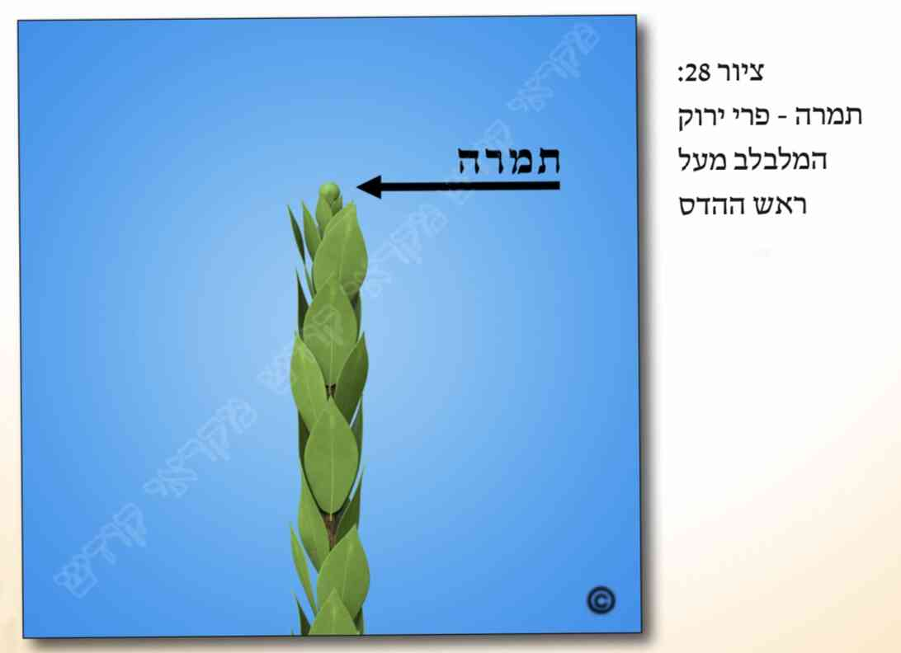
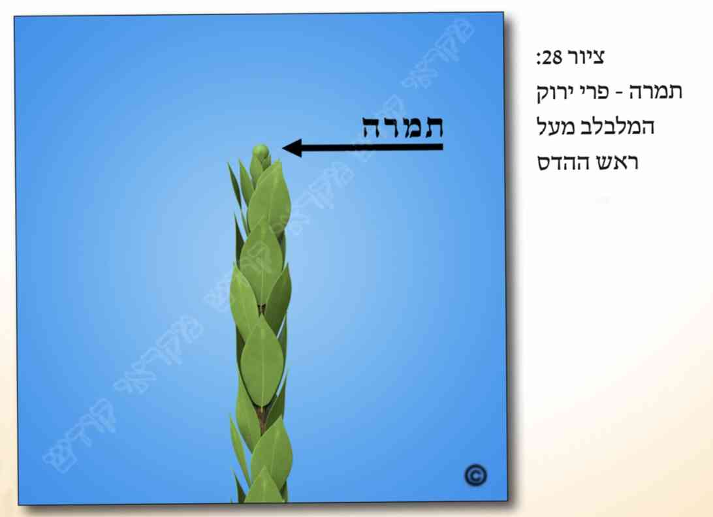

א. כתוב בתורה (ויקרא פרק כ"ג פס' מ'): "ולקחתם לכם ביום הראשון... וענף עץ עבות... ושמחתם לפני ה' אלקיכם שבעת ימים". וקיבלו רבותינו זכרונם לברכה, במסורת מהדורות שלפניהם, דור אחר דור, שכוונת הפסוק "ענף עץ עבות" הינה להדס, שענפיו חופים ומכסים את עצו.
ב. דיני כשרות ההדס מתחלקים לארבעה נושאים ראשיים, ומהם לנושאים מישניים. הנושאים הראשיים של פסולי ההדס הינם: 1) פסול מחמת מהותו של ההדס. 2)
ג. רבים הם דיני כשרות ההדס, ואנו נתרכז בעיקר בפסולים השכיחים בדורנו כאן בישראל. לגבי מהותו של ההדס יש להקפיד שיהא זה דווקא צמח ההדס, ולא מין הדומה לו או הדס מורכב. בשל הצורך שיהא ההדס עבות , יש להקפיד שהעלים שלו יחפו ויכסו את כל עצו, וכן שיצאו לפחות שלושה עלים מכל קן (והרבה פרטי דינים יש בכך). בשל הצורך שיהא לו דין הדר צריך שלא יהיה יבש, שענביו לא יהיו מרובות מעליו. ויש אומרים שאם נקטם ראשו גם הוא פסול מטעם זה. ועוד צריך שבשיעורו לא יהיה קטן מדי, וכפי שבעזרת ה' יבוארו הדברים בהמשך.
ד. כדי לדעת את הלכות ההדס צריך להכיר את חלקיו. ואלו הם חלקי ההדס: 1) בד נקרא ענף אחד של הדס [ראה בציורים (
)]. 2) קן או גבעול הוא המקום שממנו יוצאים שלושה עלים [ראה בציורים (
)] . 3) עוקץ הוא מקום יציאת השורש של העלה [ראה בציורים (
)] . 4) ענבים הם פירות ההדס שהינם כענבים קטנים [ראה בציורים (
 )] . 5) תמרה הוא פרי ירוק המלבלב לפעמים מעל ראש ההדס [ראה בציורים (

)] .
)] . 5) תמרה הוא פרי ירוק המלבלב לפעמים מעל ראש ההדס [ראה בציורים (

)] .
ה. כפי שכתבנו לעיל, צריך שיהיה ההדס ממין ההדס האמיתי, ושלא יהיה הדס מורכב. ורוב ככל ההדסים המצויים כיום אינם מורכבים אלא הינם כשרים.
ו. כדי שיהא ההדס "עץ עבות" צריכים להתקיים בו שני תנאים: 1) שיהיו העלים מחפים ומכסים את גזעו. 2) שיהיה ההדס משולש מבחינת עליו, כמבואר בסעיפים הבאים.
ז. צריך שעלי ההדס יחפו ויכסו את גזעו [ראה בציורים ( )] . ואם אין ראשי העלים מגיעים לשורש העלים שמעליהם, כך שחלק מהגזע הינו גלוי, נחלקו הפוסקים אם ההדס כשר [ראה בציורים ( )] . ודעת רוב הפוסקים להקל בכך, כל עוד רוב הגזע של ההדס מכוסה על ידי העלים.
ח. כפי שכתבנו לעיל, כדי שההדס יחשב כ"עבות" צריכים עליו להיות משולשים. ואיזהו הדס משולש, כל שיוצאים שלושה עלים (או יותר) מכל קן וקן, והינם שווים בגובה יציאתם [ראה הציורים ( )] . אך אם אין שלושתם יוצאים באותו גובה (כבסעיף הבא), הריהו הדס שוטה, ופסול [ראה בציורים ( )] . וראה עוד לקמן (בסעיף כ"ה) מה הדין אם חסרים חלק מהעלים.
ט. נחלקו הפוסקים מתי נחשב הדבר שהעלים ב"קן" הינם משולשים:
יש אומרים שרק אם ישנו קו אופקי (כעין "חוט מקיף") הנפגש בכל תחילת שלושת השורשים (בסיס העוקץ) של שלושת העלים, נחשב הדבר שהעלים בקן זה הינם משולשים [ראה בציורים (
)] . ויש מקילים ומסבירים שאין צריך ששלושת השורשים יצאו ממש מאותו קו, אלא מספיק שהחוט המקיף יפגוש את כל שלושת השורשים , ואפילו אם את אחד מהם הוא פוגש בחלקו העליון ואת האחר בחלקו התחתון [ראה בציורים (
)] . ויש מקילים יותר וסוברים שאין צריך שהחוט המקיף הנ"ל יקיף בדיוק את שלושת השורשים הללו, אלא מספיק אם במראית העין העלים בקן נראים משולשים [ראה בציורים (
 )] . וישנה עוד דעה נוספת בכך, כמבואר במקורות. וכל אחד ינהג בדבר זה כהוראת רבו.
)] . וישנה עוד דעה נוספת בכך, כמבואר במקורות. וכל אחד ינהג בדבר זה כהוראת רבו.
י. עוד בענין מתי העלים היוצאים מקן אחד נחשבים כמשולשים, ראה כאן במקורות.
יא. עלה מהעלים המשולשים שנקטם בחלקו, דינו כך: אם רוב העלה נקטם ונשאר רק מיעוטו, הריהו פסול. ואם רק מיעוטו נקטם ורובו נשאר, הריהו כשר [ראה בציורים ( )] .
יב. עלה שיש לו שנים או שלושה חתכים, יש מחמירים לראותו כפסול, ואילו פוסקים אחרים לא כתבו לפוסלו [ראה בציורים ( )] .
יג. עוד מדיני העלים, מתי נחשבים הם כעלים כשרים להשלמת הקן, ראה כאן במקורות.
יד. הדס שוטה פסול אפילו בשעת הדחק, כשאין הדס אחר כשר, וכן הינו פסול בכל שבעת ימי החג.
טו. לכתחילה יש לקחת הדס ששיעורו שלושה טפחים שהם עשרים וארבעה וחצי ס"מ ויש מחמירים וסוברים שהם שלושים ס"מ.
טז. מעיקר הדין יוצאים ידי חובה גם כשנוטלים הדס שאורכו כשנים וחצי טפחים, שהם עשרים וחצי ס"מ מחמירים וסוברים שהם עשרים וארבעה וחצי ס"מ). וכן הדין לגבי שעת הדחק, שאם אין לו הדס אחר, רשאי ליטול הדס בשיעור זה ואף לברך עליו. וראה עוד כאן במקורות.
יז. שיעור ההדס נמדד רק בעץ שבבד ההדס, אך העלים העליונים שמעל עץ ההדס אינם מצטרפים לשיעורו. [ראה בציורים ( )].
יח. כל פסולי ההדס אינם אמורים אלא כשהינם בתוך השיעורים הנ"ל (בסעיפים ט"ו וט"ז). אך אם הינם למטה בהדס, לאחר שיעור זה, אינם פוסלים את ההדס.
יט. אין הגבלה לשיעורו הגדול של ההדס, אלא יכול הוא להיות גבוה ככל שיהיה, הריהו כשר, ובתנאי ששדרת הלולב תהא גבוהה ממנו לפחות טפח (כנ"ל בפרק ב' סעיף ל"א, ולקמן בפרק ט' סעיפים י"ד וט"ו). וכן צריכים ראשי ההדסים להיות גבוהים מראשי הערבות. ולגבי הדס הארוך יותר מהשיעור ההכרחי, מהו שיעור הקינים הכשרים הדרושים בו, ראה לקמן (בסעיפים כ"ו וכ"ז).
כ. מצווה מן המובחר שיהא כל אורך ההדס מחופה ומכוסה בקינים כשרים של העלים.
כא. אף שאין חובה שכל אורכו יהיה מחופה, וכנ"ל, מכל מקום ישנה חובה שיהא רוב אורכו מחופה בקינים כשרים, ואז גם מברך עליו את ברכת הנטילה. אך אם אין רוב אורכו מכוסה על ידי קינים כשרים, הרי שההדס פסול [ראה בציורים ( )] .
כב. אין חובה שרוב חיפוי העלים יהא דווקא בחלקו העליון של ההדס, אך עדיף שיהיה בראשו.
כג. כאשר ההדס הינו בשיעור ההכרחי, ולא ארוך יותר, אזי די שרובו מחופה בקינים כשרים, גם אם אינם ברציפות אלא יש ביניהם קינים שאינם כשרים, בכל אופן מצרפים את כל הקינים הכשרים וההדס כשר [ראה בציורים (
 )] . ודין הדס שאורכו יותר מהשיעור ההכרחי, ראה לקמן (בסעיף כ"ו).
)] . ודין הדס שאורכו יותר מהשיעור ההכרחי, ראה לקמן (בסעיף כ"ו).
כד. נחלקו הפוסקים כיצד יש לשער את רוב אורך ההדס שצריך להיות מחופה בקינים משולשים. יש אומרים שיש למדוד זאת לפי מספר הקינים (שיהיו רוב הקינים כשרים), ויש אומרים שנמדד הדבר לפי אורך גזעו של ההדס (שיהיה רובו מכוסה בקינים כשרים) ראה זאת לקמן בציורים ( ) . ונראה שהמנהג הרווח הינו למדוד זאת לפי אורך גזעו.
כה. נחלקו הפוסקים לגבי דין קן שהיו בו שלושה עלים משולשים ונשר אחד מהעלים, האם עדיין נחשב קן זה ככשר. ולמעשה מנהג האשכנזים להקל בכך שנחשב עדיין קן זה ככשר, אך רק בשעת הדחק. ומכל מקום אף לדעתם, אם אין ההדס מחופה כולו בקינים כשרים אלא רק ברובו, וגם הקינים שנשארו אינם משולשים אלא נשר מהם עלה אחד ונשארו רק שני עלים [ראה בציורים (
 )] , הרי שההדס פסול (וראה עוד במקורות).
)] , הרי שההדס פסול (וראה עוד במקורות).
ומנהג הספרדים שנוי במחלוקת לגבי כשרות קן שנשר ממנו עלה אחד ונשארו בו רק שני עלים, אם קן זה נחשב עדיין ככשר בשעת הדחק, או אף בשעת הדחק אינו כשר.
כו. כאשר ההדס ארוך יותר מהשיעור ההכרחי, אין חובה שיהא רוב אורכו מחופה על ידי קינים כשרים (היינו של עלים משולשים), אלא מספיק שמקום כלשהו בהדס יהא מחופה ברוב השיעור ההכרחי (היינו מחופה קצת יותר מטפח וחצי, או אפילו קצת יותר מטפח ורבע). וראה עוד בסעיף הבא.
כז. ויותר מכך יש מי שהיקל, שאם ההדס ארוך יותר מהשיעור ההכרחי, אין חובה שהקינים הכשרים יהיו מרוכזים במקום אחד, כך שיהיו שלושה טפחים (או שנים וחצי טפחים) שברוב שיעורם ישנם קינים כשרים, אלא מספיק שבכל אורך ההדס יש קינים כשרים (משולשים) בשיעור רוב של שלושה טפחים (או אפילו שנים וחצי טפחים), אפילו שהם מפוזרים באורך ההדס [ראה בציורים ( )]. אך להקל בכך (כשההדס ארוך יותר מהשיעור) אין הדבר מוסכם לכל הפוסקים.
כח. עוד מדיני חיפוי ההדס בקינים משולשים, ראה כאן במקורות.
כט. נחלקו הפוסקים לגבי כשרותו של הדס שנקטם (היינו נחתך) ראשו. ולמעשה יש להכשירו מעיקר הדין, אך אם ניתן הדבר עדיף ליטול הדס שאינו קטום. וראה עוד בסעיפים הבאים.
ל. אין ההדס נחשב כקטום אלא אם נקטם גזעו (העץ) בראשו [ראה בציורים ( )]. אך אם נקטמו רק העלים שבראשו אינו נחשב כקטום.
לא. לדעת פוסקים רבים, הדס שנקטם ראשו, הריהו כשר רק אם הקטימה מכוסה בעלים, כמבואר כאן במקורות.
לב. הדס שהתייבשו עליו הינו פסול, ואם הם רק כמשו [ ] הריהו כשר.
לג. אין ההדס נחשב יבש אלא אם התקיימו בו שני תנאים: 1) מרוב יבשותו הינו נפרך בציפורן. 2) העלים נעשו ממש לבנים [ראה בציורים (
 )] . ומציאות כזו אינה שכיחה בהדס שנקטף באותה שנה (פרט למיקרים מיוחדים, כמבואר במקורות) ראה בציורים (
) .
)] . ומציאות כזו אינה שכיחה בהדס שנקטף באותה שנה (פרט למיקרים מיוחדים, כמבואר במקורות) ראה בציורים (
) .
לד. לאור האמור בסעיף הקודם, אם עלי ההדס "נשברים" כשלוחצים עליהם מרוב יובש, אך עדיין הינם ירוקים [ראה בציורים (
 ) , הרי שההדס כשר.
) , הרי שההדס כשר.
לה. עוד מדיני הדס יבש, ראה כאן במקורות.
לו. אם ישנם ענפים קטנים היוצאים בין קן לקן [ראה בציורים ( )] , נכון לקצוץ אותם לפני החג. ואם לא עשה כן לפני החג, לא יקצצם ביום טוב עצמו.
לז. אם בבד ההדס ישנם מעין ענבים קטנים שחורים או אדומים [ראה בציורים (
)] , והינם מרובים מעלי ההדס הריהם פוסלים את ההדס, ויש לקוצצם לפני יום טוב. ואם לא קצצם לפני החג, ואין לו הדס אחר, יטלנו בחג בלא ברכה, אך לא יקצצם בחג עצמו. ומכל מקום כיום אין דבר זה מצוי בשוק ארבעת המינים.
לח. דין האם מותר להריח בימי החג מההדס שנטלוהו למצוות ארבעת המינים, ושאר דיני ההדס, ראה כאן המקורות ולקמן (בפרק י"ג הערה ז', ופרק י"ד הערה י"ד).
&הערות:
[1] א. גמ' סוכה (דל"ב, ב'). רמב"ם (פ"ז מלולב ה"ב). מ"ב (בהקדמה לסי' תרמ"ה) וש"פ. ופרטי דיני ההדס מבוארים בטוש"ע (סי' תרמ"ו) וש"פ.
ומה שכתבנו שאת פירוש הפס' "ענף עץ עבות" קיבלו רבותינו שהוא ההדס, כ"כ הרמב"ם (שם ה"ד) ש"כל הדברים האלו מפי השמועה ממשה רבינו נתפרשו".
וכבר כתב רבנו הרמב"ם (בהקדמתו לפירוש המשנה. הבאנו דבריו לעיל, בריש פ"ב), שיסוד גדול הוא, שכל הפירושים המקובלים בידינו מפי משה רבינו אין בהם מחלוקת כלל, לפי שהפירוש שלהם מקובל מפי משה רבינו מסיני. ומ"מ אע"פ שהן מקובלות ואין בהם שום מחלוקת, הביאו ראיה מדקדוק המקרא על כך... ואין זה מפני שהיה הדבר ספק אצלם עד שלמדוהו בראיות... אלא שחקרו על ההוראה שיש במקרא לפירוש המקובל הזה. עכת"ד. וכ"כ הרמב"ן (בס' ויקרא פכ"ג פס' מ'), בס' המכתם (לסוכה דל"ה, א'), בריטב"א (לסוכה דל"ה, א') וש"פ. וע"ע בחזו"ע (ריש הל' דמ"י, דשכ"ח).
[2] ב. עפ"י הגמ' בסוכה (דל"ב, ב'). ששאלו שם בגמ' מנין דעץ ד"ענף עץ עבות" היינו הדס, דילמא זיתא, דילמא דולבא, דילמא הרדוף. והיינו דבעי דווקא הדס. ולא הדס מורכב, כדלקמן (בסעי' ה').
[3] ג. ג"ז בגמ' בסוכה (דל"ב, ב' ודל"ג, א'), ברמב"ם (שם בפ"ז), בשו"ע (סי' תרמ"ו), וכדלקמן (בסעי' ז' ואילך). והיינו מחופה ברוב עצו ושעליו משולשים.
[4] ד. עפ"י הגמ' בסוכה (שם), ומרן בשו"ע (בסי' תרמ"ו סעי' א', ב', ז', י'), וכדלקמן בפרקנו.
[5] ה. מה שכתבנו גבי שיעורו, הוא עפ"י מרן (סי' תר"נ ס"א), וש"פ. וכדלקמן בפרקנו (בסעיפים ט"ו-י"ט) ועיי"ש (בסעי' כ'-כ"ח) כמה משיעור ההדס צ"ל מחופה בקינים כשרים.
ומה שכתבנו בס"ד דבעי ג' הדסים, הוא עפ"י מרן (בסי' תרנ"א סעי' א'). ועיי"ש (בסעי' ט"ו) אי שרי להוסיף יותר מג' הדסים, וכדלקמן בס"ד (בפרק י"א סעי' נ"ד). עיי"ש שבס"ד הארכנו בדברים אלה. וע"ע בסא"ה (במיל' לדיני הדס, סקט"ז) מש"כ בשם השד"ח (מע' ל' כלל קמ"א סי' מ"ו).
[6] ו. כדלקמן (בסעי' ה').
[7] ז. כבגמ' בסוכה (דל"ב, ב'): "ענף עץ עבות", שענפיו חופין את עצו. ופרש"י: שהעץ מחופה בעלין. ע"כ. ועוד פרש"י שם: מעשה שרשרת, שיהיו מורכבין זה על זה. ע"כ. וכ"פ מרן (בסי' תרמ"ו ס"ה).
[8] ח. כדאיתא בגמ' בסוכה (דל"ב, ב'): "עבות" - אמר רב יהודה, דקיימי תלתא תלתא טרפי בקינא. וכ"פ הרמב"ם (פ"ז מלולב ה"ב), מרן (סי' תרמ"ו ס"ג) וש"פ.
[9] ט. משנה וגמ' בסוכה (דל"ב, ב' ודל"ג, א'). וכ"פ מרן (בסי' תרמ"ו סו). סא"ה (דיני הדס ריש פ"ד).
[10] י. גמ' בסוכה (דל"ג, ב'). מרן (סי' תרמ"ו ס"ב).
[11] יא. כך שנינו בסתמא במשנה בסוכה (דל"ב, ב'). אמנם נפסקה הלכה כר"ט (במשנה שם דל"ד, ב'), שנקטם ראשו, כשר. שכ"פ הרי"ף, הרמב"ם (בפ"ח מלולב ה"ה), הרא"ש והרמב"ן. וכ"פ להקל מרן (בסי' תרמ"ו סעי' א' וי'). אלא שהראב"ד (על הרמב"ם שם) פסק כסתם המשנה (בדל"ב, ב') להחמיר. ולכן כ' הרמ"א (שם בס"י) שטוב להחמיר בנקטם ראשו.
[12] יב. עפ"י השו"ע (סי' תר"נ ס"א), שי"א ששיעור הדס ג"ט, וי"א ב"ט ומחצה, וכמו שנכתוב בס"ד לקמן.
[13] יג. כ"כ רש"י בסוכה (דל"ג, א' ד"ה "שלושה"), כמו שפירש הרא"ש (פ"ג בסוכה סי' י') את דברי רש"י, דמשמע ענף כמו בדי אילן. וכ"כ בשו"ע (למשל בסי' תרמ"ו ס"ח) וש"פ. וזה שלא כפירוש הרא"ש עצמו שתלתא בחד קינא חשיב בד [הב"ד בסא"ה (הדס. פ"א הערה 20)].
[14] יד. כדאי' בגמ' סוכה (דל"ב, ב') דתלתא טרפי בקינא. והרמב"ם (בס"ז ה"ב) כ' לשון גבעול.
[15] טו. ר' רש"י ותוס' סוכה (דל"ב, ב' ד"ה "תלתא").
[16] טז. רש"י על המשנה (בדל"ב, ב'), שפירש דהוא פרי שבו שדומה לענב. ע"כ. וכעין זאת פי' המהרי"ל (הל' לולב), דהוא הגרעינין שתולין בו וכמעט דומין לגרעיני הפלפלין [הב"ד בסא"ה (הדס פ"א הערה 23)].
וענבים אלה תחילה צבעם ירוק, אח"כ הופך לאדום ולבסוף לשחור.
[17] יז. שכ"כ רש"י בסוכה (דל"ג, א' ד"ה "ועלתה"), דהוא כמין תמרה כעין הנמצא בעלי ערבה. פעמים בעלין דבוק כמין פרי ירוק, וצובעין בו הנשים צעיפיהן. ע"כ.
[18] יח. כדאי' בגמ' (דל"ב, ב') שלא יהא זיתא, דולבא או הרדוף.
[19] יט. שו"ת שבות יעקב (ח"א סי' ל"ו וח"ב סי' כ"ח). מ"ב (סי' תרמ"ח סוף סקס"ה). וכ' שם שאם יודע שהם מורכבים אין ליטול אותם, דפסולים הם כמו אתרוגים מורכבים. וראה בילקו"י (מועדים, עמ' קנ"ג) שיש מקילים בזה, אך בהערות איש מצליח (למ"ב שם, הערה 5) כתב שאין לסמוך ע"כ לברך על הדס כזה. עכ"ד. ובס"ד נלע"ד שכן עיקר.
וראה עוד ע"כ בסא"ה (במיל' לדיני הדס ס"ק א'), גבי הדס מורכב אי יש להכשירו. וע"ע שם (בסק"ב) גבי הדסים שהם משונים קצת, אי יש לחשוש שהם מורכבים.
[20] כ. מ"ב (סי' תרמ"ח סוף סקס"ה) עפ"י האחרו' (פמ"ג במש"ז סי' תרמ"ט סקי"ב).
וע"ע שם במ"ב מש"כ גבי ההדסים הגדלים בגינות השרים.
[21] כא. ברייתא בסוכה (דל"ב, ב'), ד"ענף עץ עבות" היינו שענפיו (עליו) חופין את עצו. ופרש"י (בד"ה "ענף"): שכולו ענף. שהעץ מחופה בעלין ע"י שהן עשויין בקליעה ושוכבין על אפיהן. עכ"ל. וכ"פ מרן (בסי' תרמ"ו רסע"י ג'), שעליו חופין את עצו.
[22] כב. דאיתא בגמ' (דל"ב, ב'): היכי דמי "עבות". אמר רב יהודה, והוא דקיימי תלתא תלתא טרפי בקינא. ע"כ. ופרש"י (ד"ה "תלתא"): שלושה עלין בקן אחד [ועל מה שהמשיך שם, שהן "יוצאין מתוך עוקץ אחד", כבר העירו ע"כ התוס' שם (בד"ה "תלתא") דהוא חומרא גדולה. עיי"ש].
וכ"פ מרן (בסי' תרמ"ו ס"ג).
[23] כג. כנ"ל (בהערה כ"א).
[24] כד. בשע"ת (בסי' תרמ"ו ס"ג) הב"ד הג' הריעב"ץ זצ"ל במו"ק, שאם אין עלי ההדס מגיעים ראשו של זה לעיקרו של זה ה"ז פסול, דליכא ענפיו חופין את עצו. וכ' שד"ז היינו מק"ו דלולב, שכשאין ראשו של זה מגיע לעיקרו של זה, הריהו פסול, וכ"ש בהדס שלמדים זאת מקרא שענפיו יהיו חופין את עצו. אמנם הביכור"י (בסס"י תרמ"ו בתוספת ביכורים), ובהגהות הרש"ש על הגמ' (בדי"ב, א') ועוד אחרו' חלקו ע"כ וס"ל שהוא כשר. וטעמיה דהביכור"י דאין זה ק"ו, דבלולב הלל"מ הוא דציני הר הברזל (שאין ראשו של זה מגיע לעיקרו של זה), דלאו מין לולב הכשר הוא. ומאן לימא לן דה"ה בהדס. ועוד, דאין דנין ק"ו מהלל"מ. ועוד, דק"ו פריכא הוא, דלולב שנקטם ראשו פסול, ואילו הדס שנקטם ראשו כשר. ועוד, דבס' הבהיר (לרבי נחוניא בן הקנה) ובירו' כתבו שצריך שההדס יהיו ענפיו חופין את "רובו", ומשמע דא"צ שיהא כולו מחופה בעלין, אלא די ברובו.
ובס' חיים וברכה (סי' נ"ט) האריך בכך והוכיח מד' רבינו ירוחם שדין ענפיו חופין את עצו בכלל אינו לעיכובא אלא לסימן מין ההדס (וציין לשב"ל סי' שנ"ב), והסיק דבדאיכא הדס אחר בעיר יש להחמיר כגריעב"ץ, ובדליכא אחר פשיטא דיש להקל. ע"כ.
וכפי שכתבנו, גם הרש"ש דחה את ד' המו"ק, וכן החזו"א (או"ח סי' קמ"ו סקט"ו) פקפק בדברי המו"ק (ועיי"ש בסקכ"ח שכ' שד"ז תלוי במחלו' הראשו' אי בעי כל שיעורו עבות או די ברובו. וא"כ כיוון שקיי"ל שלעיכובא ברובו, ה"נ כל שרובו מכוסה, כשר). הב"ד בסא"ה (במיל' לדיני הדס. סקי"ד). ועיי"ש בסא"ה (בח"א בבירורים סק"ו, עמ' קס"ח-קס"ט) שהוסיף להקשות ע"ד הגריעב"ץ מדברי רש"י והר"ן (במשנה דל"ג, ב') שכתבו שדין ציני הברזל לא שייך בהדס. עכ"ד. ולי הקטן ק"ק על דבריו בשם הר"ן, דהא בבה"ל (רס"י תרמ"ה ריש ד"ה "ועדיין") כ' בשם הרשב"א (דכ"ט, ב' ד"ה "נפרצו") והר"ן (בדט"ו, ב' ד"ה "גמרא") שגם בהדס בעינן שיהא כל שיעורו עבות. וא"כ קשה תרתי: 1) לכאו' הוי הוכחה לגריעב"ץ כנגד החולקים עליו. 2) מה שהקשה בסא"ה על הגריעב"ץ עפי"ד הר"ן, א"כ הרי רואים שהר"ן אכן מחמיר בדבר, כדברי הגריעב"ץ.
[25] כה. שכ"פ רוב האחרו', כנ"ל בהערה הקודמת, וכ"פ מרן הח"ח בבה"ל (רס"י תרמ"ה ד"ה "ועדיין") עפי"ד מרן (בסי' תרמ"ו ס"ה), דרק אורך רוב ההדס בעינן עבות לעיכובא ולא כולו.
[26] כו. את עיקר הדין דבעי שעליו יהיו משולשים כתבנו לעיל (בהערה כ"ב) עפי"ד הגמ' בסוכה (דל"ב, ב'), ושכ"פ מרן (בסי' תרמ"ו ס"ג).
והא דבעינן שיצאו ג' עלין מכל קן וקן, ג"ז עפי"ד הגמ' שם ופרש"י שם (כנ"ל שם).
ומה שכתבנו שיהיו לפחות ג' עלין בקן, אך שרי יותר מג' עלים, הוא עפ"י הגמ' שם (דל"ג, א') גבי אסא מצראה, דקיימי שבעה שבעה בחד קינא. וראה עוד לקמן (בהערה ל"ג).
[27] כז. רא"ש (בסוכה פ"ג סי' ח'), שו"ע (סי' תרמ"ו ס"ג), מ"ב (סק"י) וש"פ.
ואע"פ שבגמ' ושמרן (שם) כתבו דמישתעי שהעלה השלישי יוצא מעל שני העלים האחרים, מ"מ כבר כתבו הריטב"א (בדל"ב, ב'), הלבוש (בסי' תרמ"ו ס"ב) המ"ב (סקי"א) וש"פ דה"ה שהעלה השלישי יוצא מתחת לב' העלים האחרים שבקן. שג"ז חשיב שוטה.
וכ"ה אע"פ שכל עלה מעוקץ אחר [תוס' ורא"ש. ושלא כדפרש"י (בדל"ב, ב' ד"ה "תלתא")] שכ' שכל ג' העלין יוצאין מעוקץ אחד. כיוון שזו חומרא גדולה ואינו מצוי. וכ"כ המ"ב (בסק"י)].
[28] כח. כן איתא בגמ' (דל"ב, ב'), דאמר מר בר אמימר לרב אשי: אבא לההוא הדס - "שוטה" קרי ליה. ע"כ. והיינו שיש בו תרי עלים וחד מעליהם או מתחתם, שוטה קרי ליה (רש"י). וכ"פ הרמב"ם (בפ"ז מלולב ה"ב) והשו"ע (סי' תרמ"ו ס"ג). וע"ע לקמן (בהערה ל"ו). גבי ד' בה"ג בני"ד.
והטעם שנקרא הדס זה שוטה, מפני שאין עליו הולכים כסדר וכשורה אלא משובשין כשוטה שאין לו סדר ושיטה [ריטב"א (דל"ב, ב' ד"ה "א"ל מר"). מ"ב (סקי"ב) וש"פ]. ויש עוד פירושים לכך [ר' מ"ב עוז והדר (סי' תרמ"ו הערה ל"ה)]. אמנם בבה"ג כתב פירוש אחר לגמרי מה נקרא הדס שוטה, וכ': היכי דמי הדס שוטה, דרברבן טרפי ופתיין. והיינו שעליו גדולים ורחבים. והעתיקוהו כמה ראשו', וכדלקמן. ור' ע"כ בחזו"ע (דיני הדס. עמ' ש"כ) בסא"ה (במיל' לדיני הדס סקי"א), ובהערות איש מצליח (סי' תרמ"ו ס"ג הערה 2)].
דנו הפוס' אי הדס שוטה נחשב כמין אחר לגמרי, או דהוא הדס אלא שהינו פסול. וכמה נ"מ יש לכך. וכגון מש"כ בשו"ע (סי' תרנ"א סי"ד) שלא יוסיף מין אחר על הדמ"י משום בל תוסיף. ואם הדס שוטה חשיב ממש כמין אחר, הרי שאסור להוסיפו לאגודה, וכן מבואר שם בשו"ע (שם בסט"ו) שלד' בה"ג אסור להניח הדס שוטה בלולב נוסף על הג' בדין עבות. ויש עוד נ"מ בכך, ואכמ"ל.
ומ"מ לד' בה"ג (סי' ט"ו) הדס שוטה לא חשיב ממין הדס כלל, וכ"מ מדברי הרא"ש (סוכה פ"ג סי' י"ד), וכ"נ ד' הרה"מ (בפ"ז מלולב ה"ב) וכ"כ הרבה אחרו' [מ"א (סי' תרמ"ט סקכ"א), הגר"ז (סי' תרמ"ט סכ"ג), הביכור"י (סקכ"ט) והמ"ב (סי' תרמ"ט סקמ"ו)].
ומאידך ד' רב נטרונאי גאון (הב"ד בתשו' הגאונים שערי תשובה סי' שי"ט) ורב פלטוי גאון (כפי שהביאם מרן בשו"ע סס"י תרנ"א סט"ו) שהדס שוטה הינו ממין ההדס דהא גדל בערוגה א' ובענף א' עם הדס כשר שאינו שוטה, אלא שהתורה פסלתו. והב"ד מרן (בס' תרנ"א סט"ו).
הביאו דברים אלה במ"ב (סי' תרנ"א סט"ו), בחזו"ע (הל' הדס סוף הערה ה', דשי"א), והרה"ג רי"צ רימון שליט"א (בהל' הדס, הערה 22).
[29] כט. כן פשט המ"ב (סי' תרמ"ו סק"י), וכן הבין ממנו גם הרה"ג רי"צ רימון שליט"א, בספרו על הדמ"י (בדיני הדס).
ובענין מה נחשב לשורש העלים. לפי הגר"ח קנייבסקי שליט"א יש עוקץ המחבר את העלה לענף ובסופו של העוקץ במקום חיבורו לענף תופס שטח מסוים ע"ג הענף, ואם הוא מכוון בג' העלים ה"ז משולש.
ומה שמצוי שיש בליטה קטנה הסמוכה לשורש העלה (הנקרא "ניצן") ד' הגרח"ק שיתכן שאף בליטה זו נחשבת כחלק משורש העלה [הב"ד במ"ב - דירשו (סק"י הערה 14)].
[30] ל. שכ"כ הגר"ח גריינמן זצ"ל (בסוכה סי' ה') בשם החזו"א, דכל שיש קו הנפגש בכל הג' שורשים ש"ד, אע"פ שבשורש א' הוא נפגש מלמעלה ובאחד מלמטה. אלא שכתב עו"ש שהחזו"א הוסיף: לא שזהו השיעור אלא שזה ודאי ש"ד. עכ"ד [הב"ד בסא"ה במיל' לדיני אתרוג ס"ק ז')].
גם הגר"ד סולובייצ'יק אמר שאביו, הרב מבריסק אמר בשם אביו, הגר"ח סולובייצ'יק זצ"ל, שאם כל ג' השורשים נפגשים ה"ז נחשב כמשולש. וכן כתבו הגרי"י קנייבסקי זצ"ל (בקה"י לסוכה סי' כ"ו), והגרש"ז אוירבך זצ"ל (בהסכמתו לסא"ה). הב"ד אלה במ"ב - דירשו (סי' תרמ"ו סק"י הערה 13).
[31] לא. כ"כ הגר"ש ווזנר זצ"ל [מובא בקובץ מבית לוי (תשנ"ג. דיני הדס סק"ב)], שאף לכתחי' א"צ שיהיה משולש בחוט המקיף את שורשי העלים, אלא די אם במראית עין הוא נראה משולש, דעי"כ אינו בכלל הדס שוטה וכשר. וכתוב שאף הגרש"ז אוירבך היה בודק את ההדסים קצת ממרחק ולא מדד בדקדוק בקו א'. דס"ל שעיקר השילוש תלוי במראה, אלא שקשה למסור כללים בזה, ולכן לרבים הורה לדקדק על קו שווה [הליכו"ש (סוכות פ"י אורחות הלכה הערה 43). דירשו (שם)]. וקצ"ע על כך ממש"כ בהסכמתו לסא"ה. וכנ"ל.
וכעין זאת ד' הגר"ח קנייבסקי שליט"א, שמדברי החזו"א משמע שאפי' אין נפגשים בחוט המקיף ממש אלא פחות מכך, מ"מ כשר (מ"ב - דירשו שם).
[32] לב. הגר"מ אליהו זצ"ל היה מורה ובא (וכן שמעתי ממנו פעמים רבות), שאם המרחק בין תחתית העוקץ העליון (של העלה העליון בקן) לבין החלק העליון של העוקץ התחתון (היינו של העלה התחתון שבקן), אם מרחק זה הינו פחות מעובי של חוט תפירה, הרי שקן זה נחשב כמשולש. עכת"ד. וראה בירו' (כלאים פ"ה סוף ה"א). ואע"ג שבס' מאמ"ר (מועדים, פנ"ב, בדיני הדס) לא כתוב כך, מ"מ אמרו לי כמה ת"ח (מהם הרה"ג דביר זעפרני שליט"א, מגדולי תלמידיו של הגרמ"א זצ"ל, ומהעורכים והאחראים על הוצאת כתבי הגרמ"א זצ"ל לאור עולם) שלא אמנע מלכתוב זאת, למרות שבספר הנ"ל כתוב אחרת.
והטעם לכך, משום שמצינו כמה וכמה דברים הכתובים בספריו למרות שידוע שבחייו היה מורה אחרת לרבים. ולכן לא נמנעתי מלפרסם זאת. וה' יזכנו לכוון לאמיתה של תורה.
[33] לג. בס"ד נביא עוד כמה הלכות בענין מתי נחשב שההדס משולש:
1) כשישנם הרבה עלים (יותר משלושה) בקן אחד, כששלושה מהעלים הינם משולשים והשאר אינם משולשים, כ' באורחות חיים (ספינקא. סי' תרמ"ו סק"ו), שאותם שאינם משולשים צריך לחותכם, ואם אותם שאינם משולשים הינם יותר משלושה, הריהם ממש פוסלים את ההדס כדין הדס שענביו מרובים מעליו [כמבואר בשו"ע (סי' תרמ"א סי"א). ועיי"ש בבה"ל (ד"ה "נוטלו") שזו מחלו' אי פסול אף בחוה"מ].
2) כאשר ב' שורשי עלים באותו קן הינם בגובה כזה שהם נפגשים בחוט המקיף, וכן שורש העלה השני נפגש עם חוט שורש העלה השלישי ע"י חוט המקיף, אך שורש העלה השלישי לא נפגש ע"י חוט המקיף עם שורש העלה הראשון. לד' הגרא"נ קרליץ שליט"א (בחוט השני. סוכות. עמ' רפ"ח), הקו של חוט המקיף צריך לפגוש בהיקף א' את כל ג' שורשי העלים, ולכן אי"ז נחשב כמשולש. אמנם בשעה"ד יש להקל כיוון שעכ"פ יש להם שייכות זל"ז (דרך העלה השני). עכת"ד [הב"ד מ"ב - דירשו (סק"י הערה 13 ד"ה "וכן")]. ולא ראיתי את הדברים בתוך הספר (אמתח"י), אך לענ"ד באמת מדברי הריטב"א (הנ"ל בהערה כ"ח), שכ' שהדס שוטה הוא משום שאין עליו הולכים כסדר וכשורה, ואין לו סדר ושיטה, באמת נראה שאין ההדס כשר לכתחי', דהא אין הדר ושיטה לעלה הג' עם הראשון. אך מ"מ כיוון שהם פונים כלפי מעלה, זה מעל זה, בסדר קבוע, (והיינו שתלוי מאיזה צד מסתכלים על הקן הזה), לכן יש הו"א שזה נחשב כסדר, וממילא בשעה"ד יש מקום להקל.
3-4) מי שמסופק אי שורשי עלי הקן נפגשים ממש בשווה, לד' הגר"נ קרליץ שליט"א (כמובא בס' ארבעת המינים למהדרין) נחשב הדבר שההדס משולש ולעומת זאת הגרי"ז החמיר בספק משולש. ע"כ. אמנם יש להעיר שלד' הגר"נ קרליץ (בס' חוט השני) שלכתחי' באמת צריך שיהיו שורשי העלים בשווה בחוט המקיף, אבל בדיעבד אפשר להקל אם אכן נראה לעין שהוא משולש, גם כשאין שורשי העלים שווים, אלא כשיש חוט המקיף ע"י הבליטה שבבד, כיוון שעכ"פ יש להם שייכות זל"ז [הב"ד במ"ב - דירשו (סק"י, סוף הערה 13)]. והיינו שהגרנ"ק שליט"א מיקל דחשיב חוט המקיף בהתחשב בבליטה הסמוכה לשורש העלה.
5) כאשר העלים שווים בעוקציהם ויוצאים מקן א' בגובה שווה, אלא שעלה א' ארוך יותר באורכו כך שהוא בולט מעל השנים האחרים. בכפות תמרים (בסוכה דל"ג, א') בביאור ד' הרא"ש מבואר דחשיב משולש וכשר. וכ"כ בבגדי ישע (סי' תרמ"ו). הב"ד בסא"ה (במיל' לדיני הדס סק"ח).
עוד בענינים אלה ר' בסא"ה (במיל' לדיני הדס, ס"ק י"ח, י"ט, כ').
[34] לד. כ"כ הביכור"י (סי' תרמ"ו סק"ד) בשם הראב"ד בתמים דעים (סי' רכ"ח), שאם נשר קצת מהעלה ונשאר רוב עלה, כשר. עכת"ד.
[35] לה. כ' הביכור"י (סי' תרמ"ו סק"כ), שאם נפרצו העלים לב' וג' סדקים, אף שלא נשר מהם כלום, לד' הרא"ש (פ"ג סי' י') בשם בעה"ע הריהו פסול. ע"כ. והוסיף שם בביכור"י, שלא מצאנו מי שחולק על בעה"ע בזה, ולכן יש לפסול [הב"ד בסא"ה (במיל' להדס, סקי"ח)].
ומ"מ אנו כתבנו שיש להחמיר לראותו כפסול. דאמנם הביכור"י פסק כן לדינא, וכ' שלא מצינו בפוס' שחלקו ע"כ, אך מ"מ כיוון שהשו"ע וגדולי האחרו' (המ"א, הט"ז, הפמ"ג, כולל המ"ב) לא הזכירו דין זה לכן לא כתבנו זאת בסתמא שפסול.
[36] לו. בס"ד נביא עוד כמה מדיני עלי ההדס, מתי נחשבים הם כעלים כשרים:
1) כ' בה"ג (בהל' לולב): היכי דמי הדס שוטה, דרברבן טורפיה ופתיין (היינו שעליו גדולים ורחבים). הב"ד כמה גאונים וראשו' [וכמה גאונים רמזו שכך היתה הגירסא בגמ'. ר' סא"ה (במיל' להדס, סקי"א)]. אלא שהראשו' והאחרו' לא פסקו כמותו (ר' בסא"ה שם). אלא שכיוון שכל דברי בה"ג הינם דברי קבלה מהדורות הקודמים, לכן כתבו האחרו' שיש לחשוש לדבריו ולהמנע מליקח הדס כזה (סא"ה שם).
ובאשר לגודל העלה למעשה:
בהגהת הר"ש מקיידאן על הבה"ג (שם) כ' לחוש לד' בה"ג בהדסים שעליהם גדולים אף יותר מפרק השני של האגודל (היינו אורך הפרק האמצעי של בוהן היד). ומאידך בדע"ת למהרש"ם (יו"ד סי' ל"ה סקכ"ד) כ' ע"ד בה"ג, שהעלים הקטנים רק כציפורן אגודל הם הכשרים למצווה, אך עלים הגדולים כשני ציפורני אגודל יש לפקפק אם כשרים הם.
והמקור לשיעורים אלה הוא בס' מהרי"ו (סי' ב') שהביא ב' דעות לגודל עלה של הדס: י"א כפרק אמצעי של אגודל וי"א כציפורן אגודל.
ובספר שמלה חדשה (יו"ד סי' ל"ה ס"ז) כ' ששיעורים אלה הם בין לאורך העלה ובין לרוחבו. שרוחב העלה כרוחב הפרק האמצעי, ואורך העלה כאורך הפרק, וכן למ"ד ששיעורו כשיעור ציפורן [הב"ד בסא"ה (במיל' שם). וע"ע שם בבירורים (עמ' קס"ז סק"ה)].
וד' הגרשז"א זצ"ל (הליכו"ש סוכות. פ"י סי"א) שלכתחי' יש להדר שלא יהא אורך ורוחב עלי ההדס יותר מציפורן האגודל (וברשימותיו האישיות כ' שלא יהיה יותר משני ס"מ). וע"ע בתשובות והנהגות (ח"ב סי' שי"ב).
2) גבי מציאות שעלה א' רחב יותר משני העלים האחרים, כתבו כמה פוס' שיש הידור בזה שעלה א' יתפשט קצת לרוחב וירכב על שניהם, ויש שכתבו שכ"ה גם לפי דברי הזוה"ק (פ' "תצוה"). ר' ע"כ בסא"ה (במיל' לדיני הדס, סק"ט)].
3) גבי הדס שעליו קטנים מאוד, כשעורה. בתפא"י (חולין פ"ג מ"א) דן בסו"ד לפוסלו, דשמא אינו מין הדס אלא כמו הירדוף שאמרו בגמ' (דל"ב, ב') שפסול. ר' ע"כ בסא"ה (במיל' לדיני הדס, סקי"ב), ובאוצר ההדר (דף ס"ג, שער ד' סי' ד' סעי' ו').
4) כשעל עלי ההדס ישנם כתמים שחורים, האם הוא פסול מדין "הדר". לד' הגר"נ קרליץ שליט"א אין לפוסלו בשל כך. דאע"פ שענבים שחורים פוסלים את ההדס מדין הדר (מרן סי' תרמ"ו ס"ב), מ"מ אין הוכחה שכ"ה אף בעלים, ואין לנו לחדש פסול חדש [הב"ד מ"ב - דירשו (סי' תרמ"ו סק"ו הערה 7)].
5) הדס שעליו "עומדים" ואינם שוכבים ומחפים את עצו. בהגהות הרש"ש (סוכה דל"ב, ב' ד"ה "ענף") כ' שעפי"ד רש"י והר"ן יש לדון לפוסלו. ע"כ. וכן העירו ע"כ הגר"א, החזו"א (סי' קמ"ו סקל"ה, שכ' שלכאו' צריך שהעלים יעלו כלפי מעלה), ועוד כמה אחרו'. ומאידך בביכור"י (סי' תרמ"ו סקי"א) כ' שהוא כשר דהוא ממין עבות. וכן ד' הגרשז"א זצ"ל להכשיר הדס שעליו כפופים כלפי מטה, שכן מה שצריך ליטול הדמ"י דרך גדילתם הוא רק בעץ ולא בעלים [הליכות שלמה (עמ' קפ"ט). הב"ד באוצה"ד (שער ד' סי' ד' הערה קמ"ב)]. וא"כ זו מחלו' אי בכלל יש צורך בכך או שיש חשש שפסול. ור' ע"כ גם בחיים וברכה (סי' נ"ח) ובסא"ה (במיל' להדס סקט"ו).
[37] לז. כתב הרמ"א (בסי' תרמ"ו ס"ג), שהדס שוטה פסול אפילו בשעת הדחק. ע"כ. והטעם, משום שאינו בכלל הדס כלל [מ"ב (סקי"ג)]. אמנם הוסיף הרמ"א, דכיוון דאיכא מ"ד בגמ' (בדל"ב, ב') דכשר, ע"כ נוהגין במדינות אלו (היינו במדינות אשכנז, שלא היו בהם כמעט הדסים) לכתחי' לצאת באלו ההדסים המובאים, שאין בהם ג' עלים בגבעול אחד [והיינו שסמכו על מ"ד דמכשיר בתרי עלים וחד מעליהם או מתחתם, או שיש רק ב' עלים ומעליהם עוד ב' עלים, וכן הלאה (ובזה יש יותר מקום להחמיר. ר' שעה"צ סקי"ג בשם הביכור"י שבזה אין שום מקור להקל אף לא לאותו מ"ד)]. וכתב שם הרמ"א את הטעם, דיש מי שכתב דהדסים כאלה אין נקראין הדס שוטה, הואיל והם ב' עלים ע"ג ב' עלים, ואינן כהדס שוטה הנזכר בגמ'. ולכן נהגו להקל כמו שכ' מהר"י קולון ז"ל (בתשובותיו. שורש מ"א) ומהר"י איסרלן ז"ל (פסקי תה"ד סי' רנ"ט) בתשובותיהם. עכת"ד הרמ"א.
אלא שכבר רובא דרובא דהפוס' חלקו על היתר זה, שכבר כתב מרן בב"י: ואני אומר שאלו דברים בלא טעם וראיה כלל, ואין להם על מה שיסמוכו. עכ"ל. וכן כל האחרו' פקפקו ע"כ מאוד, ביניהם הגר"א, המ"ב (סקט"ו), כה"ח (סקל"ב), יחו"ד (ח"ב סי' ע"ג), הערות איש מצליח (על הרמ"א הנ"ל, הערה 3), וש"א. וכתבו שאין להקל בזה לא לגבי מציאות של עלה מעל ב' עלים או תחתיהם, ולא גבי ב' עלים ע"ג ב' עלים [מ"ב (רסקט"ו)].
[38] לח. כ"כ מרן בבדק הבית (סס"י תרמ"ו), וכ"כ כבר הרה"מ (בפ"ז מלולב ה"ב), שאם ההדס אינו עבות, הריהו כמין אחר. וכ"כ לפוסלו בכל ימי החג גם המ"ב (סי' תרמ"ו סקי"ג וסי' תרמ"ט סקמ"ב) ובבה"ל (סי' תרמ"ו ס"א ד"ה "הדס") וש"פ.
אם נשרו עליו בימי חוה"מ באופן שאין להדס שיעור משולש, כתבו הרבה אחרו' שההדס פסול. שכ"כ הריטב"א (רפ"ג בסוכה). וכ"כ הט"ז (בסי' תרמ"ו סק"ח ובסי' תרנ"א סקט"ז), הפנ"י, החיי"א (כלל ק"נ ס"ג), השע"ת ועוד פוס'. וכ' הט"ז שאף אם בירך על הדס כזה עליו לחזור ולברך שוב על הדס כשר, וכ"כ בלבו"ש. הב"ד בסא"ה (במיל' לדיני הדס סקכ"א. עיי"ש).
[39] לט. כפי שבס"ד כתבנו בכמה דוכתי, אמרו בגמ' בסוכה (דל"ב, ב'), ששיעור הדס וערבה הינו ג"ט. ואף שלא נחלקו גבי מנין הטפחים, מ"מ נחלקו באלו טפחים משערינן. דלדעת ת"ק בברייתא משערינן בטפחים בינונים שיש בהם ד' גודלין. ולר"ט משערינן בטפח הקטן בשישית מטפח בינוני [ועיי"ש שעוד נחלקו אליבא דר"ט גבי הטפח העודף של הלולב על פני ההדסים והערבות, אי משערינן אותו בטפח בינוני או קטן. אך לכאו' אי"ז נוגע לני"ד].
ונחלקו גם הראשו' בכך. שהרי"ף (בדט"ו, א') כ' שאורך ההדס והערבה י"ב גודלין (והיינו ג"ט). וכ"כ הרמב"ם (פ"ז ה"ח) ובעה"ע (ח"ב דפ"ט, א'), וכת"ק [והיינו כדעה השניה בשו"ע, כדלקמן, והיא הדעה המחמירה]. ואילו לד' הראב"ד (על הרמב"ם שם), הרא"ש (פ"ג סי' ז'), הטור ועוד הרבה ראשו', שיעור אורך ההדס והערבה הוא עשרה גודלין, והיינו ב' טפחים ומחצה.
ואכן מרן בשו"ע (סי' תר"נ ס"א) כתב את ב' הדעות: שיעור הדס וערבה ג' טפחים... באמה בת חמישה טפחים. עשה אותה ששה (ר"ל לחלק לששה טפחים, והיינו בטפחים קטנים)... נמצא שיעור הדס וערבה טפחיים ומחצה שהם עשרה גודלין... ויש אומרים ששיעור הדס וערבה שנים עשר גודלים. עכ"ד. וכ' הרמ"א שכן נוהגין לכתחי'. עכ"ד.
נמצאנו למדים שמרן כ' בסתמא ששיעור הדס וערבה הינו ב' טפחים ומחצה, ובשם י"א כ' דהוא ג"ט. ולפי הכלל של סתם וי"א הרי קיי"ל שמעיקה"ד הלכה כסתם, וא"כ מעיקה"ד אורך הדס הוי ב"ט ומחצה הטפח.
אלא שכבר הבאנו בכמה דוכתי את מחלו' האחרו', האם כשמרן מביא ב' דעות, א' כסתם והשניה כי"א (או בשם יש מי שאומר), מדוע הביא מרן גם את הדעה שאין הלכה כמוה. די"א שמרן הביא את הדעה השניה רק לשם הזכרת דעת האומרה, לשם כבודו, אך אין נ"מ למעשה במה שהביאה. וי"א שיש להתחשב בדעה השניה למעשה: שאם היא מחמירה, הרי שלכתחי', במקום שאפשר, יש להחמיר כמותה. ואם היא מקילה, הרי שבשעה"ד ניתן להקל כמותה [ר' ע"כ למשל מה שכתבנו בס"ד בהל' סוכה (פ"ג הערה ס"ו, פ"ו הערות ל' וס', ופי"א הערה כ"ו)]. ולפי"ז ה"ה בני"ד, שהדעה הנזכרת בי"א הינה הדעה המחמירה, וא"כ היכא דאפשר יש לנקוט כמותה.
ולמעשה, כתב הרמ"א (בסי' תר"נ ס"א) שנוהגים להחמיר כדעה המחמירה, והיינו ששיעור הדס הינו ג"ט. והיינו מצד המנהג. ור' בערוה"ש (סי' תר"נ ס"ג) שכ' שמעיקה"ד הלכה כרוה"פ ששיעור הדס וערבה עשרה גודלין (והיינו ב"ט ומחצה). ואם יכול להדר כרי"ף והרמב"ם שהשיעור הינו ג"ט, מה טוב, וכ"כ שיש ליטול לכתחי' הדס בן ג"ט, גם בחזו"ע (הל' הדס, סעי' ה', ובהל' דמ"י עמ' שס"ב סעי' י"ז). וכ"כ בהערות איש מצליח (לרמ"א בסי' תר"נ ס"א). וטעמם, שלמרות שמרן סתם כד' המקילים (והיינו כתב זאת בסתם, שהשיעור ב"ט ומחצה) מ"מ נכון להזהר לכתחי' כדעה שהשיעור ג"ט, משום שכן היא ד' הרי"ף והרמב"ם, ובפרט שנוגע הדבר לעניני ברכות (והיינו משום סב"ל). וציינו לכה"ח (סי' תר"נ ס"ק ו' וז'). עיי"ש.
וא"כ למרות שמרן כ' בסתמא בשו"ע דדי בב"ט ומחצה, מ"מ ד' רוב הפוס' דלכתחי' יש ליטול הדס בן ג"ט.
[40] מ. ראה מה שכתבנו בס"ד במקראי קודש הל' סוכה (בנספחים נספח י"ז ענף 9), שלפי שיטת הגרא"ח נאה זצ"ל שיור ג"ט שוחקים הייינו 24.5 ס"מ, עפ"י ס' שיעו"ת (פ"ג סעי' מ"א עמ' רע"ו)].
[41] מא. עיי"ש במקראי קודש הל' סוכה (שם בענף 10) שלשיטת הג' החזו"א זצ"ל שיעור ג"ט שוחקים הוא 29.5 ס"מ, ושבס' שיש"ת (עמ' ס"ג-ס"ד ס"ק ב', ה') כ' ששיעור הדס וערבה הינו שלושים ס"מ (וכנראה עיגל את השיעור).
[42] מב. כפי שכתבנו לעיל (בהערה ל"ט), הרי שד' הרבה ראשו' שדי לשיעור הדס בשני טפחים ומחצה. וכ"פ מרן (בסי' תר"נ ס"א בסתם, ששיעור הדס וערבה הינו טפחיים ומחצה שהם י' גודלים. והיינו שכן הדין מעיקה"ד, כדעה המקילה. וכ"כ שהדין בדיעבד גם הרבה אחרו', מהם הגר"ז, המ"ב (סק"ח), ערוה"ש (הנ"ל בהערה ל"ט), חזו"ע (הל' דמ"י סעי' י' דשס"ב), הערות איש מצליח (רס"י תר"נ הערה 1) וש"א. וע"ע בכה"ח (ס"ק ו').
[43] מג. דכיוון דטפח שוחק אחד לשיטת הגרא"ח נאה הינו כ-8.2 ס"מ [כמו שבס"ד כתבנו במקראי קודש הל' סוכה (נספח י"ז ענף 9)], הרי ששנים וחצי טפחים הינם 20.5 ס"מ.
ועיי"ש (בפתיחה לענף 9) שכתבנו שבין במצוות דאו' (היינו נטי' הדמ"י ביו"ט הראשון) ובין במצוות דרבנן (בחוה"מ) יש לילך בתר המידות השוחקות. וא"כ שיעורים אלה הינם הן גבי יו"ט ראשון וכן גבי חוה"מ.
ומ"מ מי שאינו נוהג תמיד כדעת החזו"א, אינו חייב לנקוט כשיעורי החזו"א אף במצוות דאו' (כמבואר שם בנספח י"ז).
[44] מד. עפ"י המבואר בס"ד במקראי קודש הל' סוכה (שם ענף 10) שלד' הג' החזו"א טפח שוחק הוי 9.82 ס"מ, וא"כ ב"ט ומחצה הוי 24.5 ס"מ.
[45] מה. כ"כ הגר"ז (סי' תר"נ ס"א), קיצוש"ע (סי' קל"ו ס"ג), כה"ח (סק"ו), סא"ה (הל' הדס, פ"ב ס"א), חזו"ע (הל' דמ"י סי"ז עמ' שס"ב), בהערות איש מצליח (סי' תר"נ שם) ועוד אחרו', והיינו כמש"כ מרן בסתם.
[46] מו. כפי שכתבנו לעיל (בהערה מ"ג) עפ"י מקראי קודש הל' סוכה (נספח י"ז ענף 9) הרי שבין במצוות דאו' ובין במצוות דרבנן, בשניהם אזלינן תמיד לחומרא. ולפי"ז אף בימי חוה"מ יש לילך בתר שיעורים שוחקים.
אמנם הבאנו שם (בסוף ענף 10) בשם השיש"ת (קנייבסקי. עמ' פ"ג בהערה, ובעמ' ס"ד סק"ז) שבאמת גבי מצוות דאו' חלילה להקל שפחות מטפח יהיה פחות מ-9.82 ס"מ (שהוא לדידיה טפח שוחק). אך במצוות דרבנן כ' שם שאפשר להקל ששיעור טפח הוי 9.62 ס"מ (והיינו לדידיה טפח בינוני). ולפי"ז יתכן שלדעתו בשעה"ד, וכן בדיעבד, יוצא י"ח בהדס בגודל של עשרים וארבעה ס"מ (בשיעורי החזו"א. ובשיעורי הגרא"ח נאה, יהיה שיעור טפחיים וחצי בינוניים עשרים ס"מ. אך צ"ע אי הגרא"ח נאה יסכים לכך).
אמנם צ"ע אי ניתן להקל בשיעורים הבינוניים בשל הא דעסקינן בעניני ברכות, ואמנם לד' הרבה פוס' אשכנזים (וביניהם בעל השיש"ת, וכמו שכתב בהקדמת ספרו) איסור ברכה לבטלה הינו מדרבנן, אך לדעת הפוס' הספרדים איסור ברכה לבטלה הינו מדאו'. ואף באיסור דרבנן ברור שאין לזלזל. ולפי"ז אכן צ"ע אי ניתן להקל בשיעורים הללו בימי חוה"מ, בפרט לספרדים. ואכמ"ל.
[47] מז. אע"פ שנחלקו הראב"ד והריטב"א גבי עלי הלולב שמעל השדרה, אי הינם חלק מהלולב לענין חישוב שיעורו, מ"מ גבי הדס פשיט"ל לריטב"א שהעלים שיוצאים מעל גובה גזעו, אינם בכלל שיעורו. ואמנם גבי ההדס הסתפק בזה הפמ"ג (במש"ז סי' תר"נ סק"א), אך כבר כתבו האחרו' שהוא משום שלא הגיעו לידיו דברי הריטב"א הנ"ל. וכ"פ שהעלים שיוצאים מעל גובה גזעו אינם בכלל שיעורו, גם המ"ב (רס"י תר"נ) וש"פ. ובאמת שכבר כתב מרן (שם בסי' תר"נ סעיפים א' וב'), שכ"ה גבי הלולב, ששיעורו נמדד רק לפי שדרו (שלא כראב"ד), וא"כ יש מקום שיסבור כן גם גבי הדס, אף שאין הכרח שכן דעתו גם גבי ההדס.
בס"ד יש להעיר עוד שתי הערות גבי אופן מדידת שיעור ההדס:
דנו הפוס' אם החלק התחתון של בד ההדס, במקום שעדיין אין עלים, האם גם הוא נמדד לשיעור ההדס. שהגרי"י פישר זצ"ל בשו"ת אבן ישראל (ח"ט סי' נ"ז סק"ב) הסתפק האם ניתן להחשיב לשיעור ההדס את החלק התחתון של ההדס, שהינו מגולה וללא עלים, שמצד א' יש סברא להחמיר, דהא הינו מגולה, אך מצד שני יש מקום להקל דהא כך דרכם של ההדסים לגדול. ובס' "הליכות אבן ישראל" (פכ"ו ס"ה) כתוב שמשום כך היה נוהג לחתוך הקנה התחתון של ההדס. ומאידך מובא בשם הגר"ש ווזנר זצ"ל (בקובץ מבית לוי, תשנ"ד, דיני ההדס סק"ב) שניתן להחשיב את החלק התחתון המגולה של הבד. ע"כ [הב"ד באוצה"ד (שער ד' סי' א' ס"ב)]. ונראה שהמנהג להקל.
ובעוד ענין דנו הפוס' גבי אופן מדידת שיעור ההדס, והוא בשל המציאות שלעיתים קרובות ראש ענף ההדס מסתיים בקנה ירוק ורך. יש מי שאומר שאין קנה ירוק זה מצטרף לשיעור ההדס [אג"ט (מלאכת קוצר, סקל"ב אות י"א)]. ויש מי שכתב שאין לחלק כלל בין הקנה הירוק והרך לבין הקנה החום והקשה, וממילא גם הקנה הירוק והרך מצטרף לשיעור ההדס [ס' הליכות שלמה (סוכות. פ"י סי"ב). הב"ד באוצה"ד (שם ס"ג)].
[48] מח. כ"כ הח"א ושעה"צ (סי' תר"נ סק"ג).
[49] מט. עפ"י הפוס' הנ"ל (בהערה הקודמת). ואילו לגבי צירוף קינים משולשים שנמצאים בחלקם בתוספת שיותר מהאורך ההכרחי של ההדס (היינו בתחתית של ג' הטפחים העליונים), ר' לקמן (בסעיף כ"ו וכ"ז).
[50] נ. רי"ף. רמב"ם. רא"ש. מרן (סי' תר"נ ס"ב).
[51] נא. כנ"ל (בפ"ב סל"א) ולקמן (בפ"ט סעי' י"ד וט"ו) ובעיקר בנספחים (בנספח י"ג), וכ"ז עפ"י הגמ' בסוכה (דל"ב, ב') והשו"ע (סי' תר"נ ס"א).
[52] נב. ג"ז כמו שבס"ד כתבנו לקמן (בפ"ט סעי' י"ד וט"ו) עפ"י מהרי"ו, הרמ"א (סי' תרנ"א ס"א), המ"ב (סקי"ב) וש"פ.
[53] נג. הנה גבי ני"ד ישנן ג' שיטות בקדמונים.
1) ד' הגאונים (שהביא הטור בסי' תרמ"ו) שצריך שיהא עבות (היינו קינים כשרים) בכל שיעור אורך ההדס. ואם לאו, פסול. [וכ"כ הרה"מ (בפ"ז ה"ב) בדעת הרמב"ם, שלד' הרמב"ם ההדס צ"ל משולש בכל שיעורו. ושלא כמו שכתב הטור בהבנתו את הרמב"ם].
2) דעה הפוכה כ' בעל העיטור (הל' לולב ד"צ, ב'), שאפי' אין בכל ההדס אלא קן א' כשר בעל ג' עלים משולשים, הרי שההדס כשר [וכ"כ הטור (ברס"י תרמ"ו) בד' הרמב"ם. שלא כהבנת הרה"מ, וכנ"ל בסמוך].
3) ד' הרא"ה (הב"ד הר"ן בדט"ו, ב' בדפי הרי"ף, בד"ה "גמ'") דבעינן כוליה שיעוריה דהדס שיהא עבות, למצווה. אך לעיכובא די ברוביה עבות. וכן הכריע הרא"ש [כמבואר בטור ובב"י (סי' תרמ"ו)].
ומרן פסק כד' הרא"ה והרא"ש, שלמצווה בעינן כל שיעור אורך ההדס שיהא עבות, ולעיכובא ברובו. עכ"ל.
וכל זה מדובר גבי קינים שנחשבים כקינים כשרים. מבלי להכנס למחלוקות האחרות, מה נחשב כקן כשר.
[54] נד. כנ"ל בהערה הקודמת, שהרא"ש פסק כרא"ה דדי ברוב אורכו משולש. וכ"פ מרן (שם). והסבירו האחרו' הכוונה, דהיינו שההדס ששיעורו לא יותר מי"ב גודלין, די לו בעבות של ז' גודלין, דהיינו ג' עלין. ושאר הה' גודלין, אפי' נשרו כל עליהם, או שהיו עליהם ב' ע"פ ב', או ב' עלים וחד מעליהם או מתחתם, כיוון שרובו עבות הריהו כשר.
נחלקו הפוס' אי בעינן רוב ניכר (והיינו ניכר שבוודאי יש רוב משולש), או שדי ברוב מצומצם ומדויק. שלד' מרן הגחיד"א בברכ"י (סק"ה) כל שיש משהו, ואפי' מועט, נוסף על חציו, כשר. וכ"כ הפמ"ג (במש"ז סק"ח) ועוד פוס'. ומאידך בערה"ש (טייב. סי' תרמ"ו סק"ו) כתב דבעינן רוב הנראה לעין. וכ"כ עוד פוס'. ר' ע"כ בכה"ח (סי' תרמ"ו סקל"ח), בחזו"ע (הל' הדס. הערה ו' דשי"א), ובמ"ב - דירשו (סי' תרמ"ו הערה 26). ומה שכתבו במ"ב - דירשו לדייק להחמיר מדברי הבה"ל (בד"ה "ולעיכובא"), לענ"ד זה אינו. דהמ"ב נקט כן לדוגמא בעלמא, ואין לדייק כן מהאחרו' כשסתמו והביאו רק דוגמא].
עוד דנו הפוס' גבי חיפוי ההדס ברובו, האם צריך שהעלים יגיעו לעוקץ של העלים בקו שמעליהם אם לאו. שבשע"ת (סי' תרמ"ו סק"ג) כ' בשם הריעב"ץ במו"ק שהעלים צריכים להגיע לקו שמעליהם, ואילו הביכור"י (בתוספת ביכורים בסי' תרמ"ו סק"ח) והחזו"א (סי' קמ"ו סקט"ו) לא קיבלו את דבריו והכשירו ההדס אף אם העלים הינם קטנים ואינם מגיעים לתחתית העוקץ שמעליהם. ובס' הליכות אבן ישראל (פכ"ו ס"ט) כתב שדי שרק עלה אחד מכל קן יגיע לקן שמעליו (ושזה הדבר הראשון שהגרי"י פישר היה בודק). הב"ד באוצה"ד (שער ד' סי' ד' הערה קמ"א).
ומ"מ איננו כותבים פה שיעור הרוב במידות הס"מ הנוהגות בימינו, דממילא יש מחלו' אי מחשבים את רוב שיעורו לפי מידת אורכו או לפי רוב העלים, וכמו שבס"ד נכתוב לקמן בפרקנו.
[55] נה. שו"ע הגר"ז (סי' תרמ"ו ס"ג) וש"פ.
[56] נו. כ"כ מרן (שם בסעי' ה') וכ"נ הסכמת הרמ"א שם. וכ"כ הט"ז וש"פ (הב"ד כה"ח סקל"ז).
[57] נז. הנה כ' הראב"ד (בהל' לולב, ד"ה "יש מי שאומר"), שיש מי שאומר שההדס כשר, "ובלבד שתהא עבותו בראשו". ולמד זאת ממ"ש בהדס שיבשו עליו ונשתיירו בו ג' בדי עלין לחין, דבעינן שיהא בראש כל א' וא'. אלא שהוסיף הראב"ד שלדעתו לא בעי עבות בראשו, דהדס שיבשו עליו הוא משום הדר, ואם לא נשתיירו ג' בדי עלין לחין בראשו לא הוי הדר. אך בענין משולש הוא משום עבות, ובעינן רובו עבות, וכיוון שרובו עבות, אע"פ שאין ראשו עבות הרי מתקיים בו עבות בכולה. עכת"ד. וכ"כ הרא"ש והטור.
ואכן הרמ"א (בסי' תרמ"ו ס"ו) כ' שדי בעבות "ואפי' אינו בראשו". וכ"פ האחרו'.
[58] נח. הא דעדיף שרוב חיפוי העלים יהיה דווקא בראש ההדס, הוא משום מחלו' הראשו' הנ"ל (בהערה הקודמת). וכ"כ כמה אחרו' שעדיף להחמיר בזה. שכ"כ בס' חיים וברכה (סי' נ"ב בהגהת המחבר), שלד' התוס' רי"ד (בסוכה דל"ד, ב') יש הידור שהעבות יהיה בראשו. ע"כ. וכ"כ במט"א (סי' תרמ"ו בקונט' אחרון סק"ג), וכ"מ בח"א [הב"ד בסא"ה (במיל' להדס סקכ"ג). ובמ"ב עוז והדר (סקמ"ו). וע"ע בקיצוש"ע (סי' קל"ו סק"ג)].
[59] נט. פמ"ג (במש"ז סי' תרמ"ו סק"ט) וש"א. ולגבי דין הדס ארוך מהשיעור ראה לקמן (בסעיף כ"ז) שנחלקו הפוס' אי ניתן לצרף קינים מפוזרים בכל אורך ההדס.
[60] ס. ראשית בס"ד נסביר מדוע חשוב לדעת לפי איזה רוב בעי למדוד את רוב ההדס. דדבר פשוט הוא שהעלים שבראש ההדס הינם עלים קטנים וסמוכים זל"ז. וממילא המודד את ההדס עפ"י רוב העלים, ומתחיל למדוד אותם מראש ההדס, הרי שיוצא שרוב העלים מחפים פחות מחצי אורכו של גזע ההדס. ומאידך גיסא, אם ימדדו את רוב העלים מתחתית גזע ההדס (כגון בהדס בן ג"ט) הרי שבחצי מאורכו עדיין לא מנינו את מחצית מעליו, וכדי להגיע למניית חצי מעליו יצטרכו למנות הרבה יותר מחצי גזעו.
כ' בסא"ה (במיל' להדס סקכ"ד) שמלשון מרן בב"י (סי' תרמ"ו) וכן משו"ע הגר"ז (סי' תרמ"ו ס"ג) משמע שתלוי הדבר ברוב מספר הקנים. ואילו מלשון המ"ב (בסקי"ח) משמע שהעיקר תלוי ברוב שיעור הגזע המחופה בעלים. אולם מיד דחה את הדיוקים הללו, משום שיתכן שדיברו על הדס שמס' הקנים והחיפוי של הגזע הינו שווה (עיי"ש מש"כ ע"ד ס' שיעו"ת).
וידידי הרה"ג הרי"צ רימון שליט"א כתב (בדיני חיפוי ההדס) שמדברי הפמ"ג והביכור"י נראה שהולכים בתר רוב הגזע המחופה, ושכן מבואר במ"ב (הנ"ל בסקי"ח). והוסיף שמאידך מדברי שו"ע הגר"ז (הנ"ל) מתבאר דאזלינן בתר רוב קינים, ושכ"מ מהבה"ל (ס"ה ד"ה "ולעיכובא". ולפי"ז יש סתירה בין דברי המ"ב לבה"ל), וזאת משום שדנו גבי קינים המפוזרים לאורך ההדס.
ואח"כ ראיתי (בס' אוצר ההדר, דיני הדס, הערה 118) שמובא בשם הגר"ש ווזנר זצ"ל, שיש להחמיר שגם רוב הגזע יהיה מחופה, וגם רוב הקינים יהיו משולשים. עכ"ד.
וא"כ למסקנה נראה שבפוס' אין הכרע בדבר. ואכן החזו"א (או"ח סי' קמ"ו) הסתפק בזה, דאפשר דבעינן שניהם (רוב חיפוי הגזע ורוב קינים כשרים), ולכן לא הכריע בכך. ועפי"ז כ' בסא"ה (במיל' שם ססקכ"ד) שיש להחמיר כשני הצדדים.
ולענ"ד בס"ד נראה שבאמת מלשון הפוס' קשה לדקדק בדבר, דיתכן שכתבו דבריהם לאו דווקא. ובפרט שבדברי רבותינו הקדושים האחרונים עסקינן, שאין דבריהם כדברי הראשו', וגם לא התכוונו לדקדק בדבריהם על נושא דידן. אלא מפשטות דברי הגמ' והראשו' משמע דאזלינן בתר רוב הגזע המחופה. דהא דין דידן הינו מדין עבות, שיהא הגזע מחופה ברובו ע"י עלים, וא"כ בתר הגזע אזלינן ולא בתר מס' העלים. כך בס"ד נלע"ד.
וכיצד מודדים את רוב מס' הקנים, ר' בחזו"א (סי' קמ"ו סק"ח), ובסא"ה (במיל' להדס סקכ"ו).
[61] סא. כנ"ל (בהערה הקודמת).
ולענין כיצד מודדים את רוב חיפוי ההדס, נסתפק החזו"א (שם בסק"א) כשבקנים הנשארים בהדס (שלא נשרו) אין חיפוי ברוב אורך ההדס, האם ניתן לצרף מקצת הגזע שהעלה העליון מבין הנשארים חופה אותו, האם ג"ז בכלל השיעור. ולא עוד, אלא כשהעלים פרושים לצדדים, שיש לשערם כאילו הם רוכבים על הגזע ומחפים אותו. אולם אם הם רוכבים על מקום שורש העלים שנשרו מן הקן הסמוך, יש לדון שיש לחשב את חיפויים רק עד שורש העלה שמעליהם. ע"כ [הב"ד בסא"ה (במיל' להדס. סקכ"ה)].
[62] סב. כ"כ הרה"ג רי"צ רימון שליט"א (בספרו על הדמ"י, בדיני חיפוי ההדס), שלאחר שהביא המחלו' הנ"ל הוסיף שכמדומה שהמנהג הרווח הוא עפ"י פשט המ"ב, דמודדים את רוב אורכו של ההדס. עכ"ד. וכן נראה בס"ד לענ"ד [והנה המוכרים תמיד מביאים עמם מכשיר מדידה של סנטימטרים, ע"מ להקל על הקונה למדוד את אורך הגזע המחופה בכשרות. אך כמובן שממעשי המוכרים אין ללמוד הלכה, ולכל היותר יש פה דמדומי ראיה (כלשון הרשב"א שהביא מרן בב"י בסי' ד') למ"ד דאזלינן בתר רוב הגזע המחופה].
ומ"מ בס"ד יש לשים לב, שאם מתחיל את מדידתו מחלקו העליון של ההדס, הרי שאם מצא שרוב אורכו בגזע מחופה, הרי שאז ודאי גם רוב עליו הינם כשרים, דהא בחלק זה ישנם עלים קטנים, עם רווחים קטנים, וממילא רוב עליו נמצאים בחלק זה.
[63] סג. נחלקו הראשו' והאחרו' גבי קן שהיו בו ג' עלין ונשר עלה א', אי נפסל בשל כך. דלגבי הדס שלכתחי' גדלו בקן רק ב' עלים, אף המקילים במחלו' האמורה, מ"מ בזה הם מחמירים [שכ"ד הרא"ה (הב"ד הר"ן בד"ט, ב' בדפי הרי"ף בד"ה "גמ'")].
ומ"מ גבי קן שהיו בו ג' עלין ונשר א' מהם מצינו בזה בס"ד ג' דעות בראשו':
1) ד' הרא"ה (הנ"ל), רבינו ירוחם (בנתיב ח' ח"ג) והריטב"א בחידושיו (דל"ג, א' ד"ה "ת"ר נשרו"), שדי שנשארו ב' עלים בקן משום דרובו ככולו, וזאת כמו שמכשירין כשיש קינים כשרים רק ברוב אורכו של ההדס. והר"ן לא הסכים לדברי הרא"ה וכתב שאין להקל בכך,שאין ראייתו ברורה [הב"ד מרן בב"י, וכה"ח (סקל"ט)].
2) ד' הר"ן (שם) שאם ברוב הקינים שבהדס נשר עלה א' בכל קן (מרובם), ה"ז פסול, דלא הוי שם עבות כלל, דאין עבות אלא בשלושה. ע"כ. וכ"ש לד' הגאונים (שהביא הטור, וכנ"ל בהערה נ"ג) שאפי' נשר עלה א' בלבד מכל שיעור אורך ההדס, נמי פסול.
3) ד' בעה"ע שאם נשרו העלין כשר, דדי שישאר קן א' שלם, דההדס כשר, וכ"כ הטור בהבנתו את הרמב"ם.
ר' ע"כ בטור ובב"י (סי' תרמ"ו), במ"ב (סי' תרמ"ו סקי"ח, ובהערות עוז והדר שם).
[64] סד. שכ"כ הח"א (כלל ק"נ ס"ג) וכן הסיק להקל המ"ב (סי' תרמ"ו סקי"ח) עפ"י הרבה אחרו', מהם הב"ח (הב"ד השכנה"ג בהגב"י, וכן בספר עולת התמיד), הט"ז (סק"ח), הגר"ז והביכור"י. אמנם הוסיף המ"ב דיש להקל בכך רק בשעה"ד, עפי"ד הח"א, וזאת משום שגם בין האחרו' היו שהחמירו בעיקר ד"ז. שכ"כ להחמיר המאמ"ר והגהות מעשה רוקח, שהסכימו עם הב"י (ד"ה "היו בו") שד' הרא"ש (פ"ג ס"י) והראב"ד כד' הר"ן, וא"כ רוה"פ הולכים בזה להחמיר [שעה"צ (סק"כ)].
והוסיף המ"ב (שם), שכל מה שהיקל הוא דווקא כשנשארו לפחות ב' עלים בכל קן, דהוי רובא עכ"פ. אך אם נשרו ב' עלין ברוב שיעור אורך ההדס, בזה פסול לכו"ע. עיי"ש מש"כ בסו"ד.
[65] סה. כ' מרן הח"ח בבה"ל (סעי' ה' "ולעיכובא ברובו") שיש להסתפק כאשר במציאות מצטרפות שתי מחלוקות: מחלו' אחת, גבי נשרו מעט מהקינים, אך ברוב ההדס יש קינים כשרים, שלד' הראב"ד בתמים דעים, ובהשגות (פ"ז ה"ב) והרא"ש (פ"ג ס"י) עדיין חשיב ההדס עבות, ולדעתם יכול מיעוט ההדס להיות אפי' בלי עלים כלל, ובתנאי שברוב ההדס יהיו קינים בעלי ג' עלים בכ"א. וזה שלא כגאונים שאף אם נשר עלה א' מקן א', ההדס פסול. ומחלו' שניה: אם נשר עלה א' מכל קן, שגם בזה יש מקילים (הרא"ה וסיעתו, וכנ"ל בהערות נ"ט וס').
וא"כ במציאות שנשרו מיעוט הקינים, ובקינים שנשארו (שהם רוב הקינים) נשר עלה א' בכל קן, האם גם בזה נקל, ונצרף את ב' הדעות המקילות, ונאמר תרי רובא להכשיר.
וכ' בבה"ל (שם) שראה לא' מהאחרו' שמשמע מדבריו להכשיר ההדס אף בכה"ג [וכאן איתי לומר את אשר בלבי. לפני שנים רבות אמר לי בן תורה א' (שאינו חשוד בשנאת "הליטאים") שהמ"ב לא הזכיר בשעה"צ אף פעם את שו"ע הגר"ז לבדו, אלא תמיד צירף אליו עוד פוסק. והנה באמת אין הדבר נכון (ר' למשל בשעה"צ סי' פ"ג סקט"ז). ומ"מ קצת ביררתי הענין אצל ידידי, ת"ח גדול אחד (מחסידי גור). ואמר לי שאכן עד המ"ב היתה המציאות שהליטאים לא הזכירו בספריהם, וגם לא למדו, את שו"ע הגר"ז. וכן ה"חסידים" לא למדו את כתבי הגר"א. אלא שמרן הח"ח היה הליטאי הראשון שהזכיר בספרו את שו"ע הגר"ז. תחילה פחות, ובמשך הזמן יותר ויותר (ומה שערוה"ש למרות שהיה ליטאי, כן הזכיר את שו"ע הגר"ז ושאר ספרי החסידים זה בעיקר בגלל שגדל בביתו של בעל הצמח צדק). וכיוון שהמ"ב התקבל, והיה צדיק כלל ישראלי, הרי שגם החסידים למדו בו. והוסיף אותו ת"ח ואמר שזה מש"נ בגמ' שהתורה תהא נעדרת, והיינו שתעשה עדרים עדרים, ורק המשיח יאחד את התורה של כולם. עכת"ד אותו ת"ח גדול. ולכן לא זכיתי להבין את מורנו ורבנו, הצדיק האמיתי, הכלל ישראלי, שבני"ד, בבה"ל, כתב רק שראה "לאחד מן האחרונים" ולא הזכיר בהדיא שהכוונה לשו"ע הגר"ז (בסי' תרמ"ו סעי' ד'). ומסתבר שראה את דבריו ולא זכר מיהו הפוסק שכתב כן. דהא ודאי וודאי שיש לדון את מורנו ורבנו הח"ח, לכף זכות. ודי בזה]. והוסיף בבה"ל שם שאף מהח"א (בכלל ק"נ ס"ג) משמע להקל ולצרף את המקילים בב' מחלוקות אלה.
אלא שמרן הח"ח בבה"ל תמה ע"כ, מנין לנו לצרף גם את ד' הראב"ד המיקל כנגד הגאונים, וגם את ד' הרא"ה להכשיר אם חסר עלה א' בכל קן. דדי לנו אם נקל לגבי ב' המחלוקות הללו, בכל אחת מהן לחוד ותו לא. דאם נחבר את ב' הצדדים להקל, יוצא למשל שאם בבד יש שבע שורות של קנים מלאים, ונשרו מהבד לגמרי שלוש שורות, ומארבע השורות שנשארו חסר עלה א' בכל שורה, יוצא שחסרים בסה"כ י"ג עלים (ג' שורות כפול ג' עלים, ועוד ד' עלים בודדים), ובהדס נשארו רק שמונה עלים שהם מיעוט.
ולכן הסיק בבה"ל שאין להקל ולצרף ב' מחלוקות אלה להקל רק אם אין הדס אחר בכל העיר. עכת"ד. ומ"מ בפשטות כיום אין הדבר מצוי שאין הדס אחר בכל העיר (אולי חוץ ממקרה שהביאו לחיילים במוצב רק סט א' של דמ"י, ומאחד ההדסים נשרו הרבה מאוד עלים, כבני"ד, אך זו מציאות קצת רחוקה). ולכן בס"ד כתבנו בהלכות בפשטות להחמיר, כמסקנת מרן בבה"ל.
[66] סו. מדברי החזו"א (או"ח סי' קמ"ו סקכ"ט) מתבאר שאין להקל במה שהסתפק בבה"ל, ולא ניתן לצרף את ב' דעות המקילים במחלוקות הנ"ל. דלכאו' נראה שהראב"ד אינו מקבל את הקולא של הרא"ה, והרא"ה לא קיבל את הקולא של הראב"ד. וזאת אף אם רוב העלים עדיין נשארו בבד [אמנם ידידי, הרה"ג המפו', הרי"צ רימון שליט"א, כתב בספרו (בדיני הדס, הערה 28), שלבה"ל אין לצרף את ב' הקולות אם נשארו פחות מחצי העלים שבבד. ואם נשארו יותר מחצי מהעלים ה"ז כשר. והוסיף שלחזו"א אף בכך יש להחמיר. ונראה שכתב כן עפ"י הדוגמא שכ' בבה"ל שם, וכנ"ל. אך לענ"ד גם כוונת מרן הח"ח בבה"ל הינה שלעולם אין לצרף ב' קולות אלה, וזאת אף אם נשארו רוב העלים. וראה במ"ב - דירשו (סי' תרמ"ו, הערה 43) שאכן לחזו"א אף אם נשארו רוב העלים, אין לצרף את ב' הקולות. ואכמ"ל].
[67] סז. הנה ד"ז שנוי במחלו' רבני דורנו הספרדים. שבחזו"ע (הל' הדס, סעי' ה', עמ' ש"י-שי"א) כ' שבשעת הדחק יש לסמוך על המקילים, שאם נשר עלה א' מכל קן ברוב שיעור ההדס, ה"ז הדס כשר. ומ"מ היקל בכך רק בשעת הדחק (יש להעיר שהגרע"י זצ"ל לא גילה דעתו לגבי המקרה שדיבר בבה"ל, כנ"ל בהערה ס"ה, האם ניתן לצרף את דעות המקילים כשמצטרפים שני המקרים: נשארו רק שני עלים בקן, וגם אין ההדס מחופה כולו בקינים כשרים אלא רק רובו. ואע"ג שלעיתים מצרף הגר"ע יוסף זצ"ל שתי דעות מקילות בשתי מחלוקות, מאן יימא לן שגם הכא יצרפן להקל).
ומאידך בהערות איש מצליח (על המ"ב סקי"ח, בהערה 2) כתבו שד' רוב הראשו' לפסול (עיי"ש שמנו הרבה ראשו'). ושכן גם ד' מרן בב"י, ולכן השו"ע השמיט את ד' הרא"ה (שדי בב' עלים שנשארו בקן). ושכ"כ להחמיר המאמ"ר, הנה"ש, הפמ"ג ועוד. ולכן לדעתם יש להחמיר, ובפרט דסב"ל. ולכן תמהו ע"ד החזו"ע שפסק להקל בכה"ג, הא קיי"ל סב"ל. עכת"ד.
ובס' מאמ"ר (אליהו זצ"ל. פנ"ב סעי' ע"ו) כ': אם רוב העלין נשרו או שאינם משולשים, ההדס פסול. עכת"ד. ומשמע שצריך שרוב הקינים יהיו משולשים, ואם לאו, פסול. והיינו שאם נשר עלה א' מהקן, ההדס כשר רק אם זה מיעוט קינים. וצ"ע.
[68] סח. כ"כ הב"ח (בסי' תרמ"ו ס"ב). הב"ד הבה"ל (בסעי' ה' סוד"ה "ולעיכובא") ומשמע שפסק כמותו.
[69] סט. הפמ"ג (במש"ז סק"ט) הסתפק, האם כשההדס ארוך מג"ט, ואורכו למשל ו' טפחים, האם די למשל בב' טפחים משולשים שהם רוב של השיעור ההכרחי (ג"ט או ב"ט וחצי הטפח) וזאת אע"פ שהם מפוזרים באורך ההדס במקומות שונים, או שצריך שהקינים הכשרים יהיו במקום אחד [ובשבט"ה (ח"ז סי' פ"ב) העיר שפסול כזה אינו מטעם הדר אלא שאינו עבות].
והביכור"י (בסי' תרמ"ו סקי"ד) הכריע בספק זה לקולא. הב"ד הבה"ל (שם בסוד"ה "ולעיכובא"), ומשמע שפסק כמותו. ולפי דבריהם עולה שא"צ שבמקום כלשהו בהדס יהא אורך של ג"ט שרובו מחופה בקינים כשרים, אלא די שיהיו קינים כשרים בשיעור הנדרש אע"פ שהם מפוזרים לכל אורך ההדס.
וע"ע בסא"ה (במיל' להדס, סקכ"ז) בשם החזו"א (סי' קמ"ו ס"ק י"א-י"ב).
[70] ע. ראשית יש להזכיר שהפמ"ג עצמו הסתפק בד"ז. נוסף ע"כ עלינו לדעת שהחזו"א (או"ח סי' קמ"ו ס"ק י"א-י"ב) הסביר שהביכור"י היקל דווקא כשנעשה הצירוף ע"י מקומות שרובם משולשים. אך אם הצירוף הינו לסירוגין באופן שבכל מקום ומקום בבד נשרו הרוב, בזה (להבנת החזו"א) אף לביכור"י הבד פסול.
ולמעשה כ' החזו"א (שם בסקי"ט) שעיקר הקולא של הביכור"י אינה מוכרעת כ"כ. וכן ד' הגרי"ש אלישיב זצ"ל, שהבה"ל שהביא את ב' הדעות ולא הכריע בהדיא, כוונתו לחוש לכתחי' לדעת המחמיר. ואף בשו"ת שבט"ה (ח"ז סי' פ"ב) כתב שקשה להקל בזה, כיוון שפסול עבות אינו מדין הדר, אלא שהדס שאינו עבות אין שם הדס עליו, וכיוון שבכללו ניכר שאינו עבות, לא מהני מה שאפשר לצרף ממנו רוב של ג"ט של עבות. ע"כ [הב"ד במ"ב - דירשו (הערה 47)].
[71] עא. עפ"י הברייתא בסוכה (דל"ב, ב') כ' מרן (בסי' תרמ"ו ס"א): נשרו רוב עליו. אם נשתיירו ג' עלין בקן א', כשר. עכ"ל. וכיוצ"ב חזר מרן וכ' (בסי' תרמ"ו ס"ד): יצאו הרבה בקן אחד, ונשרו מהם עד שלא נשארו אלא שלושה בקן אחד, כשר, אפי' נשרו רובם, כגון שהיו ז' ונשרו מהם ד' ונשארו ג'. עכ"ל. וכל זה אפי' היה כן בכל אורך ההדס (מ"ב סק"ד וסקט"ז). והטעם לכך, משום שעכ"פ נשארו רוב העלים, דמתוך ז' נשארו ג'. אך אם נשארו רק ב', אע"ג שכשהיו ג' ונשארו רק ב' יש מכשירים, אך הטעם שם משום שי"א שעכ"פ נשארו הרוב ולכן יש שהכשירו. אך כשהיו למשל ה' ונשרו ג' ונשארו ב' אז זה לכאו' פסול לכו"ע, דהא לא נשארו רוב (נשארו ב' מתוך ה') וגם לא חשיב עבות) דלא נשארו ג'. ואע"ג דמתוך ז' נשארו ג' מכשרינן, היינו מטעמא דעכ"פ עדיין עבות קרינא ביה. אך בני"ד לא נשארו לא רוב ולא עבות). כ"ז עפ"י המ"ב (סק"ג וסקי"ז).
[72] עב. בני"ד נראה שיש לכאו' סתירה בין הסוגיות: דשנינו במשנה (דל"ב, ב'): הדס שנקטם ראשו, פסול. וכ"כ בגמ' (שם דל"ג, ב'), דתני עולא בר חינכא: נקטם ראשו ועלתה בו תמרה, כשר. והיינו רק אם במקום הקטימה גדל פרי ירוק מלבלב (תמרה) ה"ז כשר.
ומאידך במשנה אחרת (בדל"ד, ב') שנינו: רבי ישמעאל אומר: שלושה הדסים... אפי' שנים קטומים ואחד אינו קטום. רבי טרפון אומר: אפילו שלושתן קטומים. ע"כ. ואמרו בגמ' שם: אמר רב יהודה: אמר שמואל: הלכה כרבי טרפון.
ואכן נחלקו הראשו' לדינא: הרי"ף (בדט"ו, ב' בדפי הרי"ף), הרמב"ם (פ"ח מלולב ה"ה), הרמב"ן והרא"ש (פ"ג סי' י"ד) ס"ל דהלכה כר"ט, שהדס שנקטם ראשו, כשר. והסבירו הרמב"ן והרא"ש שכשר משום שקטימתו אינה ניכרת, דעליו חופים את מקור הקטימה.
לעומת זאת יש מחמירים הסוברים שנקטם ראשו פסול. שכ"כ הראב"ד [(הל' לולב, ד"ה "ענין נקטם ראשו"). עיי"ש שכתב: וכבר הופיע רוח הקודש בבית מדרשנו מכמה שנים, והעלינו (היינו ע"י התדבקות בקב"ה, ולא שרוה"ק אמרה להם. או שכתב כך מתוך ענווה, אך באמת רוה"ק אמרה להם זאת), שהוא פסול כסתם מתניתין. עכ"ל. וכ"כ בעל המאור, הר"ן, הרה"מ (שם. וכתב שיש מקצת מהאחרו' – היינו הראשו' – שמחמירין כדברי הר"א ז"ל, וכן ראוי להורות. ע"כ). ור' במ"ב [(ססקל"ב) שהסתפק אי לד' המחמירים פסול דווקא כשנקטם בכל ג' ההדסים או אפי' בהדס א'. ועיי"ש בשעה"צ (סקל"ד)].
ומרן פסק בשו"ע (סי' תרמ"ו. סעי' א' וי') שנקטם ראשו של ההדס, כשר, אפי' לא עלתה בו תמרה... ויש פוסלין בנקטם ראשו. עכ"ל [ור' במ"ב (סק"ב) מדוע מרן חזר על דבריו, ומדוע רק בסעי' י' הביא זאת כמחלו'. ויש נותנים טעם אחר לדבר. ואכמ"ל]. ומ"מ גם מדברי הרמ"א (בסעי' י') נראה שמסכים עם דברי מרן שמעיקר הדין שרי.
וטעם האיסור, משום דלא הוי הדר [מ"ב (סקל"ב)].
וד"ז שכשר הוא אפי' בשלושת הבדים שהינם קטומים [(מ"ב (סקכ"ח) בשם פוס'. ר' הטעם בשעה"צ (סקל"א)].
[73] עג. שכ"פ מרן (הנ"ל, בסי' תרמ"ו ס"א וי'). וכ"פ הרמ"א (בסי' תרנ"א ס"א), ובמ"ב (סי' תרנ"א ס"ק ד', ה', ו') וש"פ. וכ"כ בהערות איש מצליח (על המ"ב).
[74] עד. שכ"כ הרה"מ, הרמ"א (שם בסעי' י'), ובחזו"ע (דיני הדס, סעי' ד' דש"י).
[75] עה. רמ"א (שם בסעי' י'), מ"ב (ס"ק א' ול"ה) וש"פ.
[76] עו. כ' מרן (בסי' תרמ"ו ס"י) שנקטם ראשו כשר אפי' אם לא עלתה בו תמרה. ע"כ. והיינו כמין תמרה היוצאת בעלי הערבה. דבזה ודאי כשר לכו"ע, שהתמרה מכסה על הקטימה ואין הקטימה ניכרת [מ"ב (סק"ל)].
הדס שהינו קטום בראשו וגם נקטם עלה א' מהקן העליון, כך שהקטימה נראית ואינה מוסתרת ע"י תמרה או עלים, כתבו האחרו' שפסול [פמ"ג. בית דוד. ערה"ש. שעה"צ (סקל"ב) כה"ח (סקנ"ו) וש"א]. והחזו"א (סי' קמ"ו סק"ל) מצדד להקל בדבר, דלאחר שקבעו חכמים שהדס שנקטם ראשו, כשר, הרי שאין לחלק בין אם הקטימה מכוסה או מגולה [והיינו שאף שטעם ההיתר בטל, אפ"ה הדין נשאר לקולא. ומצינו בפוס' פעמים רבות להיפך : שאע"פ שבטל הטעם לא בטלה התקנה, וכגון גבי אמירת ברכה מעין שבע בליל פסח שחל בשבת (שלמקובלים אע"פ שזה לילה השמור מן המזיקים, ולכאו' א"צ לומר ברכה זו דהא אין חשש שהמאחרים והמאריכים בתפילה יזוקו מהמזיקים כשמתפללים בבתי כנסיות שמחוץ לעיר, בכל אופן גם כשבטל הטעם לא בטלה התקנה ובכ"ז אומרים ברכה זו בליל שבת שחל בו ליל יו"ט א' דפסח). וכן יש מהפוס' שאוסרים לטבול בשבת במקוה בחמין, אע"פ שלכאו' לא שייכת כיום גזירת הבלנים (שהיו מחממים את המים בשבת והיו אומרים שחיממום בעש"ק. ולכן גזרו חכמים לא לטבול בחמין בשבת). מ"מ כיום זו מחלו' בפוס' (שהגרע"י זצ"ל אוסר לטבול בחמין בשבת, דס"ל דלא בטלה התקנה. והגר"מ אליהו זצ"ל מיקל לטבול, דס"ל שכיוון שבטל הטעם, דהיום מחממים המים במקוואות ע"י שעון שבת, לכן בטלה התקנה ושרי לטבול בחמין. ומאותו טעם הוא מיקל גם ליקח תרופות בשבת, דבטלה הגזירה, משום שבטל גם הטעם שהחמירו משום שחיקת סממנים בשבת. אך רוב ככל הפוס' מחמירים בנטילת תרופות בשבת חוץ ממקרים מסוימים. ואכן לרבנו הרש"ש זיע"א, אף כשבטל הטעם לא בטלה התקנה, כי לדעתו לחז"ל היו עוד טעמים נסתרים, כמובא בנה"ש [הב"ד כה"ח (סי' תפ"ז סקכ"ב). ולכן ס"ל לומר ברכה מעין שבע כנ"ל. וכן דעת רבנו הגר"א ז"ל מוילנא. ולכן הוא החמיר מאוד בגילוי משקין, למרות שאין נחשים מצויים ביננו, כמובא בס' מעשה רב. ומאידך לא זכיתי לירד לסוף דעת הגרמ"א זצ"ל, דהוא ס"ל כאשר ליל הסדר חל בשבת יש לומר ברכה מעין שבע בערבית, למרות שבטל הטעם של המאחרים בתפילתם שלא ישארו לבד בבתי הכנסת שבשדות.
אמנם כשלמדתי עם זוגתי שתחי' את הענין, חשבנו על עוד צדדים בכך: בענין ברכה מעין שבע, לכאו' קשה על מ"ד שא"צ לאומרה בליל הסדר שחל בשבת. דלכאו' הו"ל לגמ' לפרש שבליל הסדר הזה אין לומר ברכה מעין שבע, שהרי כל כמה שנים חל ליל הסדר בשבת. וא"כ גם בזמנם היתה מציאות כזו, ובכ"ז בגמ' סתמו ולא פירשו שבכה"ג אין לברכה. ועוד. הרי כבר הרבה דורות מתפללים בבתי כנסת שבישוב, ואין מתפללים בשדות. ומדוע כבר הראשונים לא כתבו שיש לבטל את אמירת ברכת מעין שבע, שהרי הטעם לאומרה מפני המאחרים שבשדות, לכאו' הריהו בטל. וא"כ בנידון זה כשבטל הטעם לא בטלה התקנה. ועוד בס"ד יש להעיר, שמה שגזרו חז"ל הוא דווקא על מרחצאות, שבהם המים היו מתחממים ע"י בלנים. אך לכאו' גזירה זו לא שייכת לאותם שמתרחצים בבתיהם, ובפרט שהמים מתחממים ע"י שעון שבת שמכוון כבר מערב שב"ק. ועוד צד להקל בכך, לאותם שמתרחצים ע"י מקלחת ולא בתוך אמבטי (ואכן הפוס' כבר הזכירו צד זה להקל כשמתרחץ ע"י מקלחת. ר' ע"כ במקראי קודש, הל' רה"ש. ואכמ"ל).
ומ"מ גבי מה שנראה לכאו' סתירה בין דברי הגר"מ אליהו זצ"ל בס"ד יש ליישב, שבעלמא ס"ל דנקטינן שאם בטל הטעם אכן גם בטלה התקנה. ולכן לדעתו מותר לקחת תרופות בשבת, וכן מותר לטבול במקווה עם מים חמחם בשבת, ומה דס"ל שבכל זאת י"ל את ברכה מעין שבע בליל הסדר שחל בשבת, זאת בשל דברי רבנו האריז"ל, שברכה מעין שבע הריהי כחזרת הש"ץ, ולכן צריך לאומרה אף כשמתפללים בביהכ"נ שבעיר ולאו דווקא בשדות, וכן צריך לאומרה בליל הסדר שחל בשבת.
ראה עוד במקראי קודש (הל' ליל הסדר, פרק ג' הערה ל"א). ובמקומות אחרים הארכנו בס"ד בכך. ואכמ"ל].
ומ"מ גם המ"ב בשעה"צ כתב שיש תקנה למקרה שההדס קטום וגם חסר בקן העליון, והוא עפי"ד הביכור"י, שיקטום את העץ של ההדס עד הקן הבא, כך שהעלה הבא יכסה את הקטימה, והוי פסול החוזר להכשרו. ולדעתו מה שהפמ"ג החמיר הוא משום שדיבר על מקרה שההדס שיעורו מצומצם ולא ניתן עוד לקוטמו והוסיף בשעה"צ, שמ"מ ברור שאסור לקוטמו ביו"ט דהוי מתקן מנא. עכת"ד.
ואני הקטן, בס"ד יש לי להעיר על כ"ז כמה דברים:
1) מה שכ' שהפמ"ג מישתעי כשיש לו דווקא שיעור מצומצם ולכן לא ניתן לקוטמו, לכאו' זה דוחק. דא"כ הו"ל לפמ"ג לפרש זאת ולומר דהיכא שאין שיעורו מצומצם אז מהני שיקטום.
2) הא דאסור לתקן זאת ולקטום ביו"ט, לכאו' יש מקום לומר שלחזו"א שממילא הדס זה כשר, הרי שמותר לקוטמו אף ביו"ט עצמו. אלא שע"כ יש באמת להשיב שלחולקים על החזו"א אסור לקוטמו ביו"ט שהרי לדידם הינו מתקן מנא.
3) מש"כ דהוי פסול החוזר להכשרו, לכאו' זו מחלו' אי מותר להחזיר פסול להכשרו. וכבר מצינו בדברי הגהות אשר"י (פ"ג סי' כ"ג) שכ' גבי אתרוג, שאע"פ שחתך היבשות או הנימור ה"ז פסול, הואיל ובא מכח פסול. וכ"פ הרמ"א (בסי' תרמ"ט ס"ה), שפסול כל ז'. וא"כ לרמ"א לא מהני בני"ד תקנת הביכור"י. ומ"מ הביכור"י כ' שם (בסי' תרמ"ט) דהיכא שלא ניכר פסולו הקודם, בזה אף לרמ"א יש להכשיר, וכמש"כ הרמ"א בסי' תרמ"ח סעי' י"ד. ע"כ. והשאלה הינה האם בני"ד אכן לא ניכר פסולו הקודם. ולכאו' נראה שאכן אין ניכר פסולו הקודם, ולפי"ז גם בני"ד יקל הרמ"א לקטום את ראשו ע"מ שהקן העליון יכסנו. כך בס"ד נלע"ד.
[77] עז. גמ' סוכה (דל"א, א'). מרן (סי' תרמ"ו ס"ו). בשו"ע לא הגדיר מהו שיעור העלים שיבשו, ובערוה"ש (סי' תרמ"ו ס"ט) כ' שכ"ה כשיבשו "רוב" עליו. וראה עוד לקמן גבי נשארו עליו העליונים לחים.
[78] עח. מרן (שם ס"ו). ופירוש "כמשו", פרש"י (בדל"א, א' ד"ה "כמשו"), שאיבדו את הלחות שלהם (כך פי' המתרגם את דברי רש"י). ועוד בענין כמושים ר' בשו"ע (סעי' ט'), במ"ב (סקכ"ז וססקל"א), ולקמן בסמוך (בהערה פ"ג).
[79] עט. נחלקו הראשו' מתי נחשב ההדס יבש. לד' התוס' (דכ"ט, ב' ד"ה "לולב") ההדס יבש כשהוא נפרך בציפורן. ול' הראב"ד (הל' לולב ד"ה "אלא שהסימן") דינו כיבש כשנעשה לבן.
גבי לולב כתבו הפוס' שהוא מלבין לפני שהוא נפרך בציפורן. ולכן שיטת התוס' הינה לקולא והראב"ד מחמיר (כי נפסל קודם לפסילתו אליבא דהתוס'). ואילו ההדס מלבין בדר"כ לאחר השלב שהוא נפרך בציפורן, ואז שיטת התוס' הינה לחומרא [ר' מ"ב (סק"כ) בשם הביכור"י].
ואכן מרן (בסי' תרמ"ו ס"ז) פסק, שנפסל ההדס גם כשנפרך בציפורן. ור' עוד בהערה הבאה.
[80] פ. מרן (שם ס"ז). והיינו לקולא, דרק כאשר גם נפרך בציפורן וגם הלבין, רק אז נפסל ההדס. ונראה שגם הרמ"א מסכים עם מרן גבי הדס וכ"כ המ"ב (ריש וסוף סקל"א). ור' פמ"ג (א"א סי' תרמ"ו סק"ה).
כתבו הפוס', שניתן לשער אם אכן ממש התייבש באופן שהלבינו פניו ואינם טריים עוד, אם ישרה אותם במים יום או יומיים. אם יחזור ההדס לטריות ה"ז לח וכשר [ראב"ד (בהל' לולב). מ"ב (סק"כ) וש"פ].
[81] פא. כ"כ המ"ב (סקל"א), שדין יבש ראשו שהלבינו פניו "אינו מצוי כלל בהדסים שגדלו בשנה זו".
ומ"מ נלע"ד, שעלולים ההדסים להתייבש ולהפסל אם מניחים אותם בחלון הקידמי או האחורי של המכונית, מקום שקולט הרבה מאוד שמש וחום. ואולי כ"ה גם כשמניחים אותם בבגאז' (תא המטען האחורי) של המכונית. ואגב זאת נוסיף, שדברים אלה אמורים גם לגבי שימת שקית התפילין סמוך לחלון הקידמי או האחורי של המכונית. כיוון שבמקומות אלה בקיץ השמש יוקדת, וגם בחורף קר שם מאוד, כך שיריעות התפילין עלולות להבקע ולהתפוצץ ואז הפרשיות נפסלות.
[82] פב. כ"כ מרן (בסי' תרמ"ו ס"ז), שאפי' אם נפרך בציפורן, אם עדיין ירוקים הם, כשר. ע"כ. והיינו בגלל שטרם הלבינו פניהם. וכ"כ המ"ב (בסקל"א).
[83] פג. 1) ראשית יש להדגיש שישנה חשיבות מיוחדת לעלים העליונים:
אמרו בגמ' (דל"ג, א'): ת"ר: יבשו רוב עליו ונשארו בו ג' בדי עלין לחין, כשר. ואמר רב חסדא: ובראש כל א' וא'. ע"כ.
וכתבו הריטב"א (שם בגמ') והר"ן (בדט"ו, ב' בדפי הרי"ף), שאם בכ"א מג' בדי ההדס נשאר הקן העליון לח, והיינו ג' עליו נשארו לחים, כל ההדסים כשרים. עכ"ד. והטעם כראב"ד, דפסול יבש הינו משום הדר, וכשהקן העליון לח, חל דין הדר על כל ההדס. וכ"פ מרן (בסי' תרמ"ו ס"ח) והמ"ב (סקכ"ו).
ועיי"ש בדברי מרן שהוסיף: וי"מ שאפי' מהג' (עלין) שבחד קינא יבשו שנים, ולא נשאר כי אם א' לח, כשר, והוא שיהיה (זה) העלה המורכב על שניהם. עכ"ל. עיי"ש במ"ב (ס"ק כ"א-כ"ו).
2) ועוד כ' מרן (שם ס"ט): אם אותם עלים שלא יבשו (כנ"ל, כבסעי' ח') הם כמושים, יש פוסלין ויש מכשירין. עכ"ל. ועיי"ש מ"ב (סקכ"ז).
וגבי אם יבשו דווקא העלים העליונים (הקן העליון), נחלקו הראשו' בכך. לד' הריטב"א והר"ן יש חשיבות לעלים העליונים גם לחומרא: אם התייבשו העליונים ושאר העלים נשארו לחים, ההדס פסול. ולד' הראב"ד, כיוון שאם נתלוש את העלים העליונים ההדס יהיה כשר, לכן גם אם משאירים אותם, אין הם פוסלים ההדס.
והטור פסק בהא שמחלו' זו תלויה בדין נקטם ראשו של ההדס. וכ"פ מרן בשו"ע (בסי' תרמ"ו ס"י), אם יבש ראשו דינו כנקטם ראשו וכשר.
ומאידך הב"ח (סי' תרמ"ו ד"ה ומ"ש "והלכך") פסק שאין לברך על הדס שיבשו (היינו הלבינו אבל אם רק כמשו, לית לן בה. מ"ב סקל"א) עליו העליונים, וכ"פ המ"א (סק"ח והמ"ב (סקל"ד). אלא שהביכור"י כ' שיש תקנה גם לכך, והיינו שיסיר את העלים העליונים היבשים ואז כשר לכתחי' לכו"ע. (הב"ד' המ"ב בססקל"ד). וע"ע ע"כ במ"ב (סקל"א).
וגם אם לא הסיר את העלים העליונים, כ' בבה"ל (בסעי' י' ד"ה "במקום שאפשר) שהמיקל בזה לברך במקום שאין הדס אחר אין למחות בידו.
[84] פד. מ"ב (סי' תרמ"ו סקל"ג) ושעה"צ (סקל"ו). וע"ע בהערה הבאה.
[85] פה. ר' בשעה"צ (שם) שהביא מחלו' אחרו' אי מעיקר הדין צריך לקטום ענפים אלה. וכ' שהמנהג שאין מקפידין ע"כ, ומ"מ הסיק שלכתחי' נכון לקטום אותם בערב יום טוב.
ומש"כ בשעה"צ כך נראה, שר"ל שלכתחי' יקטום אותם, לחוש לד' הפוס' דס"ל שמעיקה"ד יש לקוצצם. ומ"מ לא יקצצם ביו"ט עצמו אלא רק בעיו"ט, דלמחמירים שיש לקוצצם, הרי אם יקצצם ביו"ט עצמו הוי מתקן מנא, ואסור. לכן בס"ד נלע"ד שאם לא קצצם בעיו"ט, יטלם ביו"ט עצמו ללא קציצתם, דנראה שלמ"ב אכן מעיקה"ד אינם מעכבים (מדכתב רק "נכון" לקוצצם בעיו"ט. וכן מדכתב שהמנהג שאין מקפידין ע"כ). וממילא יכול גם לברך עליהם ביו"ט, לד' המ"ב הנ"ל.
וע"ע בכה"ח (סק"ו) ובהערות איש מצליח (על שעה"צ סקל"ו, הערה 4).
[86] פו. ברייתא (דל"ב, ב'). מרן ורמ"א (סי' תרמ"ו ס"ב) וש"פ.
ומה שכתבנו שכ"ה גבי ענבים, היינו פירות קטנים הגדלים לעיתים על ההדס כעין ענב (מ"ב סק"ה).
ומה שכתבנו שכ"ה דווקא אם הם שחורים או אדומים. דאם הם ירוקים הרי גם ההדס עצמו ירוק ולא חשיב שינוי מראה. אך שחורים או אדומים (דשחור ג"כ אדום הוא אלא שלקה. מ"ב סק"ו) ה"ז פסול, דלאו הדר הוא [רש"י. מ"ב (סק"ו). וכ' בשעה"צ (סק"ד) עוד טעם מדוע דווקא באדום ושחור מחמרינן].
ואם צבע הענבים הינו בצבע אחר (לא ירוק, אדום או שחור), הכפות תמרים מצדד להחמיר, והפמ"ג הסתפק בכך [מ"ב (ססק"ו)].
הני אדומים ושחורים, בין בנעשו בתלוש ובין במחובר [שעה"צ (סק"ה)].
ובענין האם פסול זה פסול כל ז' הימים, הרי שנחלקו בכך הפוס'. י'"א שפסול זה הינו גבי כל ז' ימי החג [שכ"כ מרן בבד"ה וכ"נ ד' הרמ"א (במפה בסי' תרמ"ט ס"ה), וכ"כ המ"א, הא"ר, בס' תפארת שמואל (הב"ד י"א בהגב"י). וכ"כ הגר"א, הגר"ז, הח"א, בית השואבה, המ"ב (סק"ט ול"ו), וכ"נ ד' כה"ח (סקכ"א) וכ"כ בהערות איש מצליח (על הרמ"א והמ"ב (סק"ט) בהערות 5, 4]. ויש מפוס' אלה שכתבו הטעם לאוסרו מדין הדר, דפסול זה אסור כל ז"י [ר' רמ"א (סי' תרמ"ט ס"ה) ומ"ב (סי' תרמ"ט סקל"ה)]. אמנם בשעה"צ (בסי' תרמ"ו סק"ח) הב"ד הפוס' שהחמירו כל ז' משום שבידו למעטן בחוה"מ.
ומאידך י"א שפסול זה הינו רק ביו"ט ראשון. שכ"כ מרן בב"י בשם האו"ח (ודחאו בבד"ה, וכנ"ל). וכ"נ ד' מרן (בסי' תרמ"ט ס"ה) גבי פסולי הדר, וכ"כ הרמ"א (בסי' תרמ"ו ס"ב. ולכאו' זה סותר את דבריו בסי' תרמ"ט ס"ה. ושמא י"ל שבני"ד הפסול אינו מדין הדר). וע"ע בבה"ל (סעי' י"א ד"ה "נוטלו ואינו") גבי הדעות השונות בהא.
[87] פז. מרן (סי' תרמ"ו ס"ב) וש"פ.
[88] פח. הא דלא יקצצם ביו"ט עצמו, כ"כ מרן (שם בס"ב). וטעמו, לפי שהוא מתקן (מנא). ומה שכתבנו שאם לא קצצם לפני החג, יטלם בחג בלא ברכה, ג"ז כ' מרן (שם בסעי' י"א). והטעם שנוטלו, כדי שלא תשתכח תורת הדס (מ"ב סקל"ו).
ועיי"ש במ"ב (סקל"ו) כיצד ינהג אם נזדמנו לו הדסים אחרים בשאר ימי החג.
[89] פט. שכן עינינו רואות שאין ענבים כאלה בהדסים, וזאת משום שהמוכרים כבר קוצצים אותם במחסני האריזה.
[90] צ. כ' מרן (בסי' תרנ"ג ס"א): הדס של מצווה אסור להריח בו [והטעם, משום שעיקרו אינו אלא להריח בו, ומזה הוקצה כל ז"י (מ"ב סי' תרנ"ג סק"א). ור' בב"י בשם הרשב"א אם מהני תנאי)]. וכתבו האחרו' שכן הדין אפי' בשבת [ואע"ג שאין נוטלין בשבת, מ"מ הרי הוקצה לכל שבעה [מ"ב (סק"ב)].
ועוד כ' מרן (שם בסעי' ב'): עבד להושענא ולא אגבהה למיפק בה, שריא בהנאה. עכ"ל. והטעם, דכיוון דלא יצא בה ה"ז הזמנה בלבד ולאו מילתא היא [מ"ב (סק"ד). ועיי"ש מש"כ גבי לולב של אשתקד, אי אחר החג בטלה הקדושה. ר' ע"כ במ"ב (סי' תרל"ח סק"ט), ומה שכתבנו בס"ד בהל' סוכה. ואכמ"ל].
וראה עוד בענינים אלה ביתר הרחבה לקמן (בפרק י"ג הערה ז' ובפרק י"ד הערה י"ד).
[91] צא. 1) בס"ד כתבנו לעיל דין כתמים שחורים על עלי ההדס, שי"א שאינם פוגמים ברמת ההכשר של ההדסים [חוט השני (סוכות. עמ' רפ"ח)]. ומ"מ לעיתים מפזרים אבקה על עלי ההדס (כדי שלא ישחירו), וי"א שאבקה זו חוצצת במצוות הנטילה ולכן צריך להורידה [הגר"נ קרליץ שליט"א בס' חוט השני (סוכות סוף עמ' רפ"ח); הב"ד באוצר ההדר (סוף דיני עלי ההדס, הערה 146)].
2) י"א שלמרות שעיקר דין קטום בהדס נא' על הענף ולא על העלים, בכל אופן ראוי להקפיד ולהדר ליטול הדס שראשי העלים העליונים אינם קטומים [כ"כ בס' חיים וברכה (ס"ק ס"ז)]. וע"ע במש"כ רבנו המאירי בסוכה (דל"ב, ב') שדין הקטימה נאמרה דווקא בראשי העלים, ור' מש"כ עליו בשבט"ה [(ח"ח סי' קפ"ח). הב"ד בס' אוצר ההדר (שם הערה 145)].